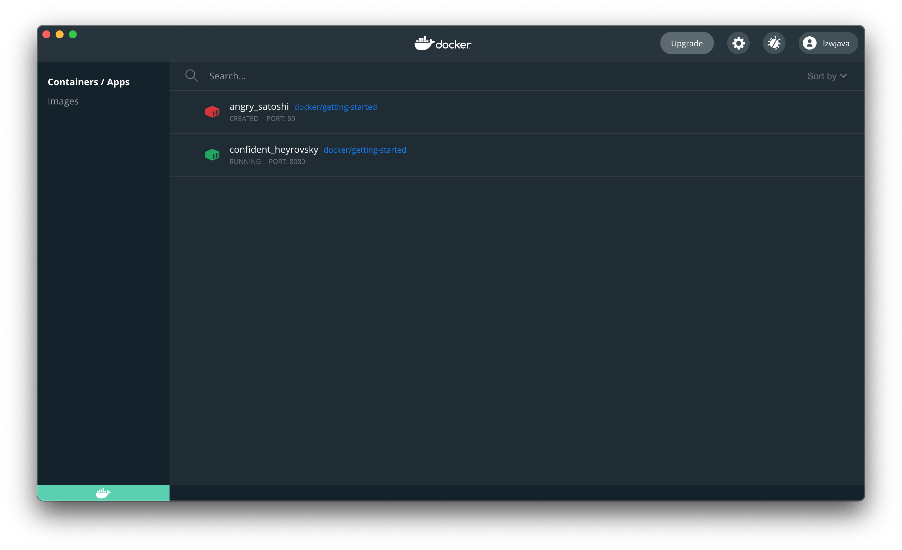

## ู ูุฏู ุฉ ุฅูู ุงูุญูุณุจุฉ ุงูุณุญุงุจูุฉ ูุงูุจูุงูุงุช ุงูุถุฎู ุฉ | ุฃุตููุ ุชุฑุฌู ุจูุงุณุทุฉ AI
ุชุญุชูู ูุฐู ุงูุฏูุฑุฉ ุนูู ุงูู ูุงุถูุน ุงูุชุงููุฉ:
- Spark
- Hadoop
- Kubernetes
- Docker
- Flink
- MongoDB
(ู ูุงุญุธุฉ: ุงูุฃุณู ุงุก ุงูุชูููุฉ ู ุซู Spark ูHadoop ูKubernetes ูDocker ูFlink ูMongoDB ูุง ุชูุชุฑุฌู ุนุงุฏุฉู ูู ุงูุณูุงูุงุช ุงูุชูููุฉุ ูุฐุง ุชู ุชุฑููุง ูู ุง ูู.)
ุนูุฏ ุงูุญุฏูุซ ุนู ุงูุญูุณุจุฉ ุงูุณุญุงุจูุฉุ ูุจุฏู ุฃูู ูุง ูู
ูู ุงูุงุณุชุบูุงุก ุนู ุงูุนุฏูุฏ ู
ู ุงูุฃุฏูุงุช ู
ุซู Hadoop ูHive ูHbase ูZooKeeper ูDocker ูKubernetes ูSpark ูKafka ูMongoDB ูFlink ูDruid ูPresto ูKylin ูElastic Search. ูู ุณู
ุนุช ุจูุง ุฌู
ูุนูุงุ بعض ูุฐู ุงูุฃุฏูุงุช ูุฌุฏุชูุง ูู ูุตู ูุธุงุฆู ู
ุซู ู
ููุฏุณ ุงูุจูุงูุงุช ุงูุถุฎู
ุฉ ูู
ููุฏุณ ุงูุฎูููุฉ ุงูู
ูุฒุนุฉ. ูุฐู ุงููุธุงุฆู ุชุชู
ุชุน ุจุฑูุงุชุจ ุนุงููุฉ. ุฏุนููุง ูุญุงูู ุชุซุจูุชูุง ุฌู
ูุนูุง ูุงูุชูุงุนุจ ุจูุง ููููุงู.
ุงุณุชูุดุงู Spark ุงูุฃููู
ุงูู
ููุน ุงูุฑุณู
ู ูููู ุฅู Spark ูู ู
ุญุฑู ุชุญููู ูุณุชุฎุฏู
ูู
ุนุงูุฌุฉ ุงูุจูุงูุงุช ุงูุถุฎู
ุฉ. Spark ูู ูู ุงูุฃุณุงุณ ู
ุฌู
ูุนุฉ ู
ู ุงูู
ูุชุจุงุช. ูุจุฏู ุฃูู ูุง ูุชู
ุชูุณูู
ู ุฅูู ุฎุงุฏู
ู ุนู
ูู ู
ุซู Redis. Spark ููุณุชุฎุฏู
ููุท ุนูู ุฌุงูุจ ุงูุนู
ูู. ูู
ุช ุจุชุญู
ูู أحدث إصدار ู
ู ุงูู
ููุน ุงูุฑุณู
ูุ ููู spark-3.1.1-bin-hadoop3.2.tar.
$ tree . -L 1
.
โโโ LICENSE
โโโ NOTICE
โโโ R
โโโ README.md
โโโ RELEASE
โโโ bin
โโโ conf
โโโ data
โโโ examples
โโโ jars
โโโ kubernetes
โโโ licenses
โโโ python
โโโ sbin
โโโ yarn
11 ู ุฌูุฏูุงุ 4 ู ููุงุช
ูุจุฏู ุฃููุง عبارة ุนู بعض ู
ูุชุจุงุช ุงูุชุญููู ุงูู
ูุชูุจุฉ ุจูุบุงุช ู
ุฎุชููุฉ.
ูู
ุง ุฐูุฑ ุงูู
ููุน ุงูุฑุณู
ู ุฃูู ูู
ูู ุชุซุจูุช ู
ูุชุจุงุช ุงูุชุจุนูุฉ ู
ุจุงุดุฑุฉ ูู Python ุจุงุณุชุฎุฏุงู
ุงูุฃู
ุฑ ุงูุชุงูู:
`pip install pyspark`
```shell
$ pip install pyspark
ุฌู
ุน pyspark
ุชูุฒูู pyspark-3.1.1.tar.gz (212.3 MB)
|โโโโโโโโโโโโโโโโโโโโโโโโโโโโโโโโ| 212.3 MB 14 kB/s
ุฌู
ุน py4j==0.10.9
ุชูุฒูู py4j-0.10.9-py2.py3-none-any.whl (198 kB)
|โโโโโโโโโโโโโโโโโโโโโโโโโโโโโโโโ| 198 kB 145 kB/s
ุจูุงุก ุนุฌูุงุช ููุญุฒู
ุงูู
ุฌู
ุนุฉ: pyspark
ุจูุงุก ุนุฌูุฉ ูู pyspark (setup.py) ... ุชู
ุชู
ุฅูุดุงุก ุนุฌูุฉ ูู pyspark: ุงุณู
ุงูู
ูู=pyspark-3.1.1-py2.py3-none-any.whl ุญุฌู
=212767604 sha256=0b8079e82f3a5bcadad99179902d8c8ff9f8eccad928a469c11b97abdc960b72
ุชู
ุชุฎุฒูููุง ูู ุงูุฏููู: /Users/lzw/Library/Caches/pip/wheels/23/bf/e9/9f3500437422e2ab82246f25a51ee480a44d4efc6c27e50d33
ุชู
ุจูุงุก pyspark ุจูุฌุงุญ
ุชุซุจูุช ุงูุญุฒู
ุงูู
ุฌู
ุนุฉ: py4j, pyspark
ุชู
ุชุซุจูุช py4j-0.10.9 ู pyspark-3.1.1 ุจูุฌุงุญ
ุชู ุงูุชุซุจูุช ุจูุฌุงุญ.
ูุฐุง ุณูุธูุฑ ุนูู ุงูู ููุน ุงูุฑุณู ูุ ูููุงู بعض ุงูุฃู ุซูุฉ.
./bin/run-example SparkPi 10
ุฃููุ ูุจุฏู ุฃูู ูู ูู ุชุดุบูู ุงูุจุฑูุงู ุฌ ุงูู ูุฌูุฏ ูู ุญุฒู ุฉ ุงูุชุซุจูุช ุงูุชู ุชู ุชูุฒูููุง ููุชู. ููู حدث خطأ.
$ ./bin/run-example SparkPi 10
21/03/11 00:06:15 WARN NativeCodeLoader: ุบูุฑ ูุงุฏุฑ ุนูู ุชุญู
ูู ู
ูุชุจุฉ native-hadoop ูู
ูุตุชู... ูุชู
ุงุณุชุฎุฏุงู
ุงููุฆุงุช ุงูู
ุฏู
ุฌุฉ ูู ุฌุงูุง ุญูุซู
ุง ูุงู ุฐูู ู
ูุงุณุจูุง
21/03/11 00:06:16 INFO ResourceUtils: ูู
ูุชู
ุชูููู ู
ูุงุฑุฏ ู
ุฎุตุตุฉ ูู spark.driver.
21/03/11 00:06:16 WARN Utils: ุงูุฎุฏู
ุฉ 'sparkDriver' ูู
ุชุชู
ูู ู
ู ุงูุฑุจุท ุนูู ู
ููุฐ ุนุดูุงุฆู ู
ุฌุงูู. ูุฏ ترغب ูู ุงูุชุญูู ู
ู
ุง إذا ูุงู ูุชู
ุชูููู ุนููุงู ربط ู
ูุงุณุจ.
Spark ูู ู ุญุฑู ู ุนุงูุฌุฉ ุณุฑูุน ูุนุงู ู ุชูุงูู ู ุน ุจูุงูุงุช Hadoop. ูู ููู ุงูุนู ู ูู ู ุฌู ูุนุงุช Hadoop ู ู ุฎูุงู YARN ุฃู ุงููุถุน ุงูู ุณุชูู ูู Sparkุ ููู ููู ู ุนุงูุฌุฉ ุงูุจูุงูุงุช ูู HDFSุ HBaseุ Cassandraุ Hiveุ ูุฃู ุชูุณูู ุฅุฏุฎุงู ู ู Hadoop. ุชู ุชุตู ูู ู ูุฃุฏุงุก ูู ู ู ุงูู ุนุงูุฌุฉ ุงูุฏูุนูุฉ (ู ุดุงุจูุฉ ูู MapReduce) ูุฃุญู ุงู ุงูุนู ู ุงูุฌุฏูุฏุฉ ู ุซู ุงูุจุซ ุงูู ุจุงุดุฑุ ุงูุงุณุชุนูุงู ุงุช ุงูุชูุงุนููุฉุ ูุชุนูู ุงูุขูุฉ.
ุธูุฑุช ููู
ุฉ hadoop عدة ู
ุฑุงุช. بعد ุงูุจุญุซ ุนูู Google ุนู spark depends hadoopุ ูุฌุฏุช ูุฐุง ุงููุต. ูุจุฏู ุฃู ูุฐุง ูุนุชู
ุฏ ุนูู ุจูุงูุงุช ุจุชูุณูู Hadoop. ุฏุนููุง ูุฏุฑุณ Hadoop ุฃููุงู.
Hadoop
بعد ุงูุงุทูุงุน ุงูุณุฑูุน ุนูู ุงูู ููุน ุงูุฑุณู ูุ ุฏุนูุง ูุจุฏุฃ ุจุงูุชุซุจูุช.
brew install hadoop
ุฃุซูุงุก ุนู ููุฉ ุงูุชุซุจูุชุ ุฏุนููุง ูุชุนุฑู ุนูู ุงูุฃู ุฑ.
ู ูุชุจุฉ ุจุฑู ุฌูุงุช Apache Hadoop ูู إطار ุนู ู ูุณู ุญ ุจู ุนุงูุฌุฉ ู ุฌู ูุนุงุช ุงูุจูุงูุงุช ุงููุจูุฑุฉ ุจุดูู ู ูุฒุน عبر ู ุฌู ูุนุงุช ู ู ุฃุฌูุฒุฉ ุงููู ุจููุชุฑ ุจุงุณุชุฎุฏุงู ูู ุงุฐุฌ ุจุฑู ุฌูุฉ ุจุณูุทุฉ. ุชู ุชุตู ูู ูุง ูุชุชูุณุน ู ู ุฎูุงุฏู ูุฑุฏูุฉ ุฅูู ุขูุงู ุงูุฃุฌูุฒุฉุ ุญูุซ ูููุฑ ูู ุฌูุงุฒ ุญุณุงุจูุง ู ุญูููุง ูุชุฎุฒูููุง. ุจุฏููุง ู ู ุงูุงุนุชู ุงุฏ ุนูู ุงูุฃุฌูุฒุฉ ูุชูููุฑ ุงูุชููุฑ ุงูุนุงููุ ุชู ุชุตู ูู ุงูู ูุชุจุฉ ููุณูุง ูุงูุชุดุงู ูุงูุชุนุงู ู ู ุน ุงูุฃุนุทุงู ุนูู ู ุณุชูู ุทุจูุฉ ุงูุชุทุจููุ ู ู ุง ูููุฑ ุฎุฏู ุฉ ุนุงููุฉ ุงูุชููุฑ ุนูู ู ุฌู ูุนุฉ ู ู ุฃุฌูุฒุฉ ุงููู ุจููุชุฑุ ุญูุซ ูุฏ ูููู ูู ุฌูุงุฒ عرضة ููุฃุนุทุงู.
ุจู ุนูู ุขุฎุฑุ Hadoop ูู إطار ุนู ู ู ุตู ู ูู ุนุงูุฌุฉ ู ุฌู ูุนุงุช ุงูุจูุงูุงุช ุงูู ูุฒุนุฉ. ูุฏ ุชููู ูุฐู ุงูุจูุงูุงุช ู ูุฒุนุฉ ุนูู ุงูุนุฏูุฏ ู ู ุฃุฌูุฒุฉ ุงููู ุจููุชุฑ. ูุชู ุงูุชุนุงู ู ู ุนูุง ุจุงุณุชุฎุฏุงู ูู ูุฐุฌ ุจุฑู ุฌุฉ ุจุณูุท. ุชู ุชุตู ูู ู ููุชู ุฏุฏ ู ู ุฎุงุฏู ูุงุญุฏ ุฅูู ุขูุงู ุงูุฃุฌูุฒุฉ. ุจุฏูุงู ู ู ุงูุงุนุชู ุงุฏ ุนูู ุชููุฑ ุงูุฃุฌูุฒุฉ ุงูุนุงููุฉุ ุชู ุชุตู ูู ูุฐู ุงูู ูุชุจุฉ ูููุดู ุนู ุงูุฃุฎุทุงุก ูู ุนุงูุฌุชูุง ุนูู ู ุณุชูู ุงูุชุทุจูู. ูุจุงูุชุงููุ ูู ูู ูุดุฑ ุฎุฏู ุงุช ุนุงููุฉ ุงูุชููุฑ ูู ุนูููุฏ (cluster)ุ ุนูู ุงูุฑุบู ู ู ุฃู ูู ุฌูุงุฒ ูู ุงูุนูููุฏ ูุฏ ูููู عرضة ูููุดู.
$ brew install hadoop
خطأ:
homebrew-core ูู ุงุณุชูุณุงุฎ ุถุญู.
homebrew-cask ูู ุงุณุชูุณุงุฎ ุถุญู.
ูุชูููุฐ `brew update`ุ ูู
ุฃููุงู ุจุชุดุบูู:
git -C /usr/local/Homebrew/Library/Taps/homebrew/homebrew-core fetch --unshallow
git -C /usr/local/Homebrew/Library/Taps/homebrew/homebrew-cask fetch --unshallow
ูุฏ ุชุณุชุบุฑู ูุฐู ุงูุฃูุงู
ุฑ بضع ุฏูุงุฆู ููุชูููุฐ بسبب ุงูุญุฌู
ุงููุจูุฑ ููู
ุณุชูุฏุนุงุช.
ุชู
ูุฑุถ ูุฐุง ุงูููุฏ ุจูุงุกู ุนูู ุทูุจ GitHub ูุฃู ุชุญุฏูุซ ุงูุงุณุชูุณุงุฎุงุช ุงูุถุญูุฉ
ูู ุนู
ููุฉ ู
ูููุฉ ููุบุงูุฉ بسبب ุชุฎุทูุท ุงูุดุฌุฑุฉ ูุญุฑูุฉ ุงูู
ุฑูุฑ ูู
Homebrew/homebrew-core ู Homebrew/homebrew-cask. ูุญู ูุง ูููู
ุจุฐูู ุชููุงุฆููุง
ูุชุฌูุจ ุชูููุฐ ุนู
ููุฉ ุฅูุบุงุก ุงูุงุณุชูุณุงุฎ ุงูุถุญูุฉ ุจุดูู ู
ุชูุฑุฑ ูู
ุฃูุธู
ุฉ CI (ูุงูุชู ูุฌุจ ุฅุตูุงุญูุง ุจุฏูุงู ู
ู ุฐูู ูุนุฏู
ุงุณุชุฎุฏุงู
ุงุณุชูุณุงุฎุงุช ุถุญูุฉ). ูุฃุณู ููุฅุฒุนุงุฌ!
==> ุชูุฒูู https://homebrew.bintray.com/bottles/openjdk-15.0.1.big_sur.bottle.tar.gz
ุชู
ุงูุชูุฒูู ู
ุณุจููุง: /Users/lzw/Library/Caches/Homebrew/downloads/d1e3ece4af1d225bc2607eaa4ce85a873d2c6d43757ae4415d195751bc431962--openjdk-15.0.1.big_sur.bottle.tar.gz
==> ุชูุฒูู https://www.apache.org/dyn/closer.lua?path=hadoop/common/hadoop-3.3.0/hadoop-3.3.0.tar.gz
ุชู
ุงูุชูุฒูู ู
ุณุจููุง: /Users/lzw/Library/Caches/Homebrew/downloads/764c6a0ea7352bb8bb505989feee1b36dc628c2dcd6b93fef1ca829d191b4e1e--hadoop-3.3.0.tar.gz
==> ุชุซุจูุช ุงูุชุจุนูุงุช ูู hadoop: openjdk
==> ุชุซุจูุช ุชุจุนูุฉ hadoop: openjdk
==> صب openjdk-15.0.1.big_sur.bottle.tar.gz
==> ู
ูุงุญุธุงุช
ููู تجد ุฃุบููุฉ Java ุงููุธุงู
ูุฉ ูุฐุง JDKุ ูู
ุจุฅูุดุงุก رابط ุฑู
ุฒู ุจุงุณุชุฎุฏุงู
sudo ln -sfn /usr/local/opt/openjdk/libexec/openjdk.jdk /Library/Java/JavaVirtualMachines/openjdk.jdk
openjdk ูู keg-onlyุ ู
ู
ุง ูุนูู ุฃูู ูู
ูุชู
ุฅูุดุงุก رابط ุฑู
ุฒู ูู ูู /usr/localุ
ูุฃูู ูุชุนุงุฑุถ ู
ุน ุบูุงู java ุงูุฎุงุต ุจู macOS.
إذا ููุช بحاجة ุฅูู ุฃู ูููู openjdk ุฃูููุง ูู ู
ุณุงุฑ PATH ุงูุฎุงุต ุจูุ ูู
ุจุชูููุฐ ุงูุฃู
ุฑ ุงูุชุงูู:
echo 'export PATH="/usr/local/opt/openjdk/bin:$PATH"' >> /Users/lzw/.bash_profile
ูุชู
ููู ุงูู
ุชุฑุฌู
ุงุช ู
ู ุงูุนุซูุฑ ุนูู openjdkุ ูุฏ تحتاج ุฅูู ุชุนููู:
export CPPFLAGS="-I/usr/local/opt/openjdk/include"
==> ุงูู
ูุฎุต
๐บ /usr/local/Cellar/openjdk/15.0.1: 614 ู
ูููุงุ 324.9 ู
ูุฌุงุจุงูุช
==> ุชุซุจูุช Hadoop
๐บ /usr/local/Cellar/hadoop/3.3.0: 21,819 ู
ูููุงุ 954.7 ู
ูุฌุงุจุงูุชุ ุชู
ุงูุจูุงุก ูู ุฏูููุชูู ู15 ุซุงููุฉ
==> ุชุฑููุฉ ุชุจุนูุฉ ูุงุญุฏุฉ:
Maven 3.3.3 -> 3.6.3_1
==> ุชุฑููุฉ Maven 3.3.3 -> 3.6.3_1
==> ุชูุฒูู https://www.apache.org/dyn/closer.lua?path=maven/maven-3/3.6.3/binaries/apache-maven-3.6.3-bin.tar.gz
==> ุงูุชูุฒูู ู
ู https://mirror.olnevhost.net/pub/apache/maven/maven-3/3.6.3/binaries/apache-maven-3.6.3-bin.tar.gz
######################################################################## 100.0%
خطأ: ุฎุทูุฉ brew link ูู
ุชูุชู
ู ุจูุฌุงุญ
ุชู
ุจูุงุก ุงูุตูุบุฉุ ูููู ูู
ูุชู
ุฅูุดุงุก رابط ุฑู
ุฒู ูู /usr/local
تعذر ุฅูุดุงุก رابط ุฑู
ุฒู ูู bin/mvn
ุงููุฏู /usr/local/bin/mvn
ูู رابط ุฑู
ุฒู ูุชุจุน ูู Maven. ูู
ููู ุฅูุบุงุก ุงูุฑุจุท:
brew unlink maven
ูุฅุฌุจุงุฑ ุงูุฑุจุท ูุงุณุชุจุฏุงู ุฌู ูุน ุงูู ููุงุช ุงูู ุชุถุงุฑุจุฉ:
brew link --overwrite maven
ูุฅุฏุฑุงุฌ ุฌู ูุน ุงูู ููุงุช ุงูุชู ุณูุชู ุญุฐููุง:
brew link --overwrite --dry-run maven
ุงูู ููุงุช ุงูุชู ูุฏ ุชููู ู ุชุถุงุฑุจุฉ ูู: /usr/local/bin/mvn -> /usr/local/Cellar/maven/3.3.3/bin/mvn /usr/local/bin/mvnDebug -> /usr/local/Cellar/maven/3.3.3/bin/mvnDebug /usr/local/bin/mvnyjp -> /usr/local/Cellar/maven/3.3.3/bin/mvnyjp ==> ุงูู ูุฎุต ๐บ /usr/local/Cellar/maven/3.6.3_1: 87 ู ูููุงุ 10.7 ู ูุฌุงุจุงูุชุ ุชู ุจูุงุคูุง ูู 7 ุซูุงูู ุฅุฒุงูุฉ: /usr/local/Cellar/maven/3.3.3โฆ (92 ู ูููุงุ 9 ู ูุฌุงุจุงูุช) ==> ุงูุชุญูู ู ู ุงูุชุจุนูุงุช ุงูู ุนุชู ุฏุฉ ุนูู ุงูุตูุบ ุงูู ุญุฏุซุฉโฆ ==> ูู ูุชู ุงูุนุซูุฑ ุนูู ุชุจุนูุงุช ู ุนุทูุฉ! ==> ุชุญุฐูุฑุงุช ==> openjdk ููู ุชุชู ูู ุฃุบููุฉ Java ุงููุธุงู ูุฉ ู ู ุงูุนุซูุฑ ุนูู ูุฐุง JDKุ ูู ุจุฅูุดุงุก رابط ุฑู ุฒู ุจุงุณุชุฎุฏุงู sudo ln -sfn /usr/local/opt/openjdk/libexec/openjdk.jdk /Library/Java/JavaVirtualMachines/openjdk.jdk
openjdk ูู keg-onlyุ ู
ู
ุง ูุนูู ุฃูู ูู
ูุชู
ุฅูุดุงุก رابط ุฑู
ุฒู ูู ูู /usr/localุ
ูุฃูู ูุชุนุงุฑุถ ู
ุน ุงูุบูุงู java ุงูุฎุงุต ุจู macOS.
إذا ููุช بحاجة ุฅูู ุฃู ูููู openjdk ุฃูููุง ูู ู
ุณุงุฑ PATH ุงูุฎุงุต ุจูุ ูู
ุจุชูููุฐ ุงูุฃู
ุฑ ุงูุชุงูู:
echo 'export PATH="/usr/local/opt/openjdk/bin:$PATH"' >> /Users/lzw/.bash_profile
ูุฐุง ุงูุฃู
ุฑ ุณูุถูู ู
ุณุงุฑ openjdk ุฅูู ู
ูู .bash_profile ุงูุฎุงุต ุจูุ ู
ู
ุง ูุถู
ู ุฃู ูุชู
ุชุญู
ููู ุฃูููุง ุนูุฏ ูุชุญ ุฃู ุทุฑููุฉ ุฌุฏูุฏุฉ.
ูุชู
ููู ุงูู
ุชุฑุฌู
ุงุช ู
ู ุงูุนุซูุฑ ุนูู openjdkุ ูุฏ تحتاج ุฅูู ุชุนููู:
export CPPFLAGS="-I/usr/local/opt/openjdk/include"
ูุงุญุธุช ูู ุณุฌู إخراج brew ุฃู maven ูู
ูุชู
ุฑุจุทู ุจุดูู ุฌูุฏ. بعد ุฐููุ ูู
ุช بإجراء ربط ุฅุฌุจุงุฑู ููุฅุตุฏุงุฑ 3.6.3_1.
brew link --overwrite maven
ุชู
ุชุซุจูุช Hadoop ุจูุฌุงุญ.
ุงููุญุฏุงุช
ูุชุถู ู ุงูู ุดุฑูุน ูุฐู ุงููุญุฏุงุช:
- Hadoop Common: ุงูุฃุฏูุงุช ุงูู ุดุชุฑูุฉ ุงูุชู ุชุฏุนู ูุญุฏุงุช Hadoop ุงูุฃุฎุฑู.
- ูุธุงู ุงูู ููุงุช ุงูู ูุฒุน Hadoop (HDFSโข): ูุธุงู ู ููุงุช ู ูุฒุน ูููุฑ ูุตูููุง ุนุงูู ุงูุฅูุชุงุฌูุฉ ูุจูุงูุงุช ุงูุชุทุจููุงุช.
- Hadoop YARN: إطار ุนู ู ูุฌุฏููุฉ ุงูู ูุงู ูุฅุฏุงุฑุฉ ู ูุงุฑุฏ ุงูุนูููุฏูุฉ.
- Hadoop MapReduce: ูุธุงู ูุนุชู ุฏ ุนูู YARN ูู ุนุงูุฌุฉ ู ุฌู ูุนุงุช ุงูุจูุงูุงุช ุงููุจูุฑุฉ ุจุดูู ู ุชูุงุฒู.
- Hadoop Ozone: ู ุฎุฒู ูุงุฆูุงุช ูู Hadoop.
ูุจุฏู ุฃู ููุงู ูุญุฏุงุช ู
ุชุงุญุฉ. ุนูุฏ ูุชุงุจุฉ hadoopุ ุณูุธูุฑ ุงูุชุงูู:
$ hadoop
ุงูุงุณุชุฎุฏุงู
: hadoop [ุฎูุงุฑุงุช] ุฃู
ุฑ_ูุฑุนู [ุฎูุงุฑุงุช ุงูุฃู
ุฑ ุงููุฑุนู]
ุฃู hadoop [ุฎูุงุฑุงุช] ุงุณู
_ุงูุตู [ุฎูุงุฑุงุช ุงุณู
ุงูุตู]
ุญูุซ ุงุณู
_ุงูุตู ูู ุตู Java ู
ูุฏู
ู
ู ุงูู
ุณุชุฎุฏู
ุงูุฎูุงุฑุงุช ุฅู ุง ูุง ุดูุก ุฃู ุฃู ู ู:
โconfig dir ุฏููู ุชููุฆุฉ Hadoop โdebug ุชูุนูู ูุถุน ุชุตุญูุญ ุงูุฃุฎุทุงุก ูู ุณูุฑูุจุช ุงูุดู โhelp ู ุนููู ุงุช ุงูุงุณุชุฎุฏุงู buildpaths ู ุญุงููุฉ ุฅุถุงูุฉ ู ููุงุช ุงููุฆุงุช ู ู شجرة ุงูุจูุงุก hostnames list[,of,host,names] ุงูุฃุณู ุงุก ุงูู ุถููุฉ ููุงุณุชุฎุฏุงู ูู ูุถุน ุงูุนุจุฏ (slave mode) hosts filename ูุงุฆู ุฉ ุงูุฃุณู ุงุก ุงูู ุถููุฉ ููุงุณุชุฎุฏุงู ูู ูุถุน ุงูุนุจุฏ (slave mode) loglevel level ุชุนููู ู ุณุชูู log4j ููุฐุง ุงูุฃู ุฑ workers ุชูุนูู ูุถุน ุงูุนุงู ู (worker mode)
SUBCOMMAND ูู أحد ุงูุฃูุงู ุฑ ุงูุชุงููุฉ: ุฃูุงู ุฑ ุงูุฅุฏุงุฑุฉ:
daemonlog ุงูุญุตูู ุนูู/ุชุนููู ู ุณุชูู ุงูุณุฌู ููู ุฎุงุฏู (daemon)
ุฃูุงู
ุฑ ุงูุนู
ูู:
archive ุฅูุดุงุก ุฃุฑุดูู Hadoop
checknative ุงูุชุญูู ู
ู ุชููุฑ ู
ูุชุจุงุช Hadoop ุงูุฃุตููุฉ ูุถุบุทูุง
classpath طباعة ู
ุณุงุฑ ุงููุฆุฉ ุงูู
ุทููุจ ููุญุตูู ุนูู ู
ูู Hadoop jar ูุงูู
ูุชุจุงุช ุงูู
ุทููุจุฉ
conftest ุงูุชุญูู ู
ู صحة ู
ููุงุช ุงูุชูููู XML
credential ุงูุชูุงุนู ู
ุน ู
ุฒูุฏู ุงูุงุนุชู
ุงุฏุงุช
distch أداة ุชุบููุฑ ุงูุจูุงูุงุช ุงููุตููุฉ ุงูู
ูุฒุนุฉ
distcp ูุณุฎ ู
ูู ุฃู ุฃุฏูุฉ ุจุดูู ู
ุชูุฑุฑ
dtutil ุนู
ููุงุช ู
ุชุนููุฉ ุจุฑู
ูุฒ ุงูุชูููุถ
envvars عرض ู
ุชุบูุฑุงุช ุจูุฆุฉ Hadoop ุงูู
ุญุณูุจุฉ
fs ุชุดุบูู ุนู
ูู ูุธุงู
ู
ููุงุช ุนุงู
gridmix ุฅุฑุณุงู ู
ุฒูุฌ ู
ู ุงููุธุงุฆู ุงูุงุตุทูุงุนูุฉุ ูู
ุฐุฌุฉ ุญู
ู ู
ู ุฅูุชุงุฌ ู
ุณุจู
jar <jar> ุชุดุบูู ู
ูู jar. ู
ูุงุญุธุฉ: ูุฑุฌู ุงุณุชุฎุฏุงู
"yarn jar" ูุจุฏุก ุชุทุจููุงุช YARNุ ูููุณ ูุฐุง ุงูุฃู
ุฑ.
jnipath طباعة java.library.path
kdiag ุชุดุฎูุต ู
ุดุงูู Kerberos
kerbname عرض ุชุญููู ุงูู
ุจุฏุฃ auth_to_local
key إدارة ุงูู
ูุงุชูุญ عبر KeyProvider
rumenfolder ุชุญุฌูู
أثر ุฅุฏุฎุงู rumen
rumentrace ุชุญููู ุงูุณุฌูุงุช ุฅูู أثر rumen
s3guard إدارة ุงูุจูุงูุงุช ุงููุตููุฉ ุนูู S3
trace عرض ูุชุนุฏูู إعدادات تتبع Hadoop
version طباعة ุงูุฅุตุฏุงุฑ
ุงูุฃูุงู ุฑ ุงูุฎููุฉ (Daemon Commands):
kms ุชุดุบูู KMSุ ุฎุงุฏู إدارة ุงูู ูุงุชูุญ registrydns ุชุดุบูู ุฎุงุฏู DNS ููุณุฌู
ูุฏ ูุทุจุน SUBCOMMAND ุงูู ุณุงุนุฏุฉ ุนูุฏ ุงุณุชุฏุนุงุฆู ุจุฏูู ู ุนุงู ูุงุช ุฃู ุจุงุณุชุฎุฏุงู -h.
ุงูู
ููุน ุงูุฑุณู
ู ูุฏู
بعض ุงูุฃู
ุซูุฉ.
```shell
$ mkdir input
$ cp etc/hadoop/*.xml input
$ bin/hadoop jar share/hadoop/mapreduce/hadoop-mapreduce-examples-3.2.2.jar grep input output 'dfs[a-z.]+'
$ cat output/*
ูุงุญุธุช ูุฌูุฏ ู
ูู share/hadoop/mapreduce/hadoop-mapreduce-examples-3.2.2.jar. ูุฐุง ูุนูู ุฃูู ุฑุจู
ุง ุชููู ููุงู بعض ู
ููุงุช ุงูุฃู
ุซูุฉ ุงูุชู ูู
ูุญุตู ุนูููุง. ุฃุชููุน ุฃู ุชุซุจูุช Homebrew ูุฏ ูุง ูุดู
ู ูุฐู ุงูู
ููุงุช. ูุฐูู ูู
ูุง ุจุชูุฒูู ุญุฒู
ุฉ ุงูุชุซุจูุช ู
ู ุงูู
ููุน ุงูุฑุณู
ู.
$ tree . -L 1
.
โโโ LICENSE-binary
โโโ LICENSE.txt
โโโ NOTICE-binary
โโโ NOTICE.txt
โโโ README.txt
โโโ bin
โโโ etc
โโโ include
โโโ lib
โโโ libexec
โโโ licenses-binary
โโโ sbin
โโโ share
ุธูุฑ ุฏููู share. ูููู ูู ุญููุง Homebrew ูุง ูุญุชูู ุนูู ูุฐู ุงูู
ููุงุช ุงูุฅุถุงููุฉุ ابحث ุนู ุฏููู ุชุซุจูุช Homebrew.
$ type hadoop
hadoop ูู /usr/local/bin/hadoop
$ ls -alrt /usr/local/bin/hadoop
lrwxr-xr-x 1 lzw admin 33 Mar 11 00:48 /usr/local/bin/hadoop -> ../Cellar/hadoop/3.3.0/bin/hadoop
$ cd /usr/local/Cellar/hadoop/3.3.0
ูุฐุง ูู شجرة ุงูุฏููู ุงูู
ุทุจูุน ูู /usr/local/Cellar/hadoop/3.3.0/libexec/share/hadoop.
$ tree . -L 2
.
โโโ client
โ โโโ hadoop-client-api-3.3.0.jar
โ โโโ hadoop-client-minicluster-3.3.0.jar
โ โโโ hadoop-client-runtime-3.3.0.jar
โโโ common
โ โโโ hadoop-common-3.3.0-tests.jar
โ โโโ hadoop-common-3.3.0.jar
โ โโโ hadoop-kms-3.3.0.jar
โ โโโ hadoop-nfs-3.3.0.jar
โ โโโ hadoop-registry-3.3.0.jar
โ โโโ jdiff
โ โโโ lib
โ โโโ sources
โ โโโ webapps
โโโ hdfs
โ โโโ hadoop-hdfs-3.3.0-tests.jar
โ โโโ hadoop-hdfs-3.3.0.jar
โ โโโ hadoop-hdfs-client-3.3.0-tests.jar
โ โโโ hadoop-hdfs-client-3.3.0.jar
โ โโโ hadoop-hdfs-httpfs-3.3.0.jar
โ โโโ hadoop-hdfs-native-client-3.3.0-tests.jar
โ โโโ hadoop-hdfs-native-client-3.3.0.jar
โ โโโ hadoop-hdfs-nfs-3.3.0.jar
โ โโโ hadoop-hdfs-rbf-3.3.0-tests.jar
โ โโโ hadoop-hdfs-rbf-3.3.0.jar
โ โโโ jdiff
โ โโโ lib
โ โโโ sources
โ โโโ webapps
โโโ mapreduce
โ โโโ hadoop-mapreduce-client-app-3.3.0.jar
โ โโโ hadoop-mapreduce-client-common-3.3.0.jar
โ โโโ hadoop-mapreduce-client-core-3.3.0.jar
โ โโโ hadoop-mapreduce-client-hs-3.3.0.jar
โ โโโ hadoop-mapreduce-client-hs-plugins-3.3.0.jar
โ โโโ hadoop-mapreduce-client-jobclient-3.3.0-tests.jar
โ โโโ hadoop-mapreduce-client-jobclient-3.3.0.jar
โ โโโ hadoop-mapreduce-client-nativetask-3.3.0.jar
โ โโโ hadoop-mapreduce-client-shuffle-3.3.0.jar
โ โโโ hadoop-mapreduce-client-uploader-3.3.0.jar
โ โโโ hadoop-mapreduce-examples-3.3.0.jar
โ โโโ jdiff
โ โโโ lib-examples
โ โโโ sources
โโโ tools
โ โโโ dynamometer
โ โโโ lib
โ โโโ resourceestimator
โ โโโ sls
โ โโโ sources
โโโ yarn
โโโ csi
โโโ hadoop-yarn-api-3.3.0.jar
โโโ hadoop-yarn-applications-catalog-webapp-3.3.0.war
โโโ hadoop-yarn-applications-distributedshell-3.3.0.jar
โโโ hadoop-yarn-applications-mawo-core-3.3.0.jar
โโโ hadoop-yarn-applications-unmanaged-am-launcher-3.3.0.jar
โโโ hadoop-yarn-client-3.3.0.jar
โโโ hadoop-yarn-common-3.3.0.jar
โโโ hadoop-yarn-registry-3.3.0.jar
โโโ hadoop-yarn-server-applicationhistoryservice-3.3.0.jar
โโโ hadoop-yarn-server-common-3.3.0.jar
โโโ hadoop-yarn-server-nodemanager-3.3.0.jar
โโโ hadoop-yarn-server-resourcemanager-3.3.0.jar
โโโ hadoop-yarn-server-router-3.3.0.jar
โโโ hadoop-yarn-server-sharedcachemanager-3.3.0.jar
โโโ hadoop-yarn-server-tests-3.3.0.jar
โโโ hadoop-yarn-server-timeline-pluginstorage-3.3.0.jar
โโโ hadoop-yarn-server-web-proxy-3.3.0.jar
โโโ hadoop-yarn-services-api-3.3.0.jar
โโโ hadoop-yarn-services-core-3.3.0.jar
โโโ lib
โโโ sources
โโโ test
โโโ timelineservice
โโโ webapps
โโโ yarn-service-examples
ูู
ููู ุฃู ุชุฑู ุงูุนุฏูุฏ ู
ู ุญุฒู
jar.
$ mkdir input
$ ls
bin hadoop-config.sh hdfs-config.sh libexec sbin yarn-config.sh
etc hadoop-functions.sh input mapred-config.sh share
$ cp etc/hadoop/*.xml input
$ cd input/
$ ls
capacity-scheduler.xml hadoop-policy.xml hdfs-site.xml kms-acls.xml mapred-site.xml
core-site.xml hdfs-rbf-site.xml httpfs-site.xml kms-site.xml yarn-site.xml
$ cd ..
$ bin/hadoop jar share/hadoop/mapreduce/hadoop-mapreduce-examples-3.2.2.jar grep input output 'dfs[a-z.]+'
JAR ุบูุฑ ู
ูุฌูุฏ ุฃู ููุณ ู
ูููุง ุนุงุฏููุง: /usr/local/Cellar/hadoop/3.3.0/libexec/share/hadoop/mapreduce/hadoop-mapreduce-examples-3.2.2.jar
$
$ bin/hadoop jar share/hadoop/mapreduce/hadoop-mapreduce-examples-3.3.0.jar grep input output 'dfs[a-z.]+'
2021-03-11 01:54:30,791 WARN util.NativeCodeLoader: ุบูุฑ ูุงุฏุฑ ุนูู ุชุญู
ูู ู
ูุชุจุฉ native-hadoop ูู
ูุตุชู... ูุชู
ุงุณุชุฎุฏุงู
ูุฆุงุช Java ุงูู
ุฏู
ุฌุฉ ุญูุซู
ุง ูุงู ุฐูู ู
ู
ูููุง
2021-03-11 01:54:31,115 INFO impl.MetricsConfig: ุชู
ุชุญู
ูู ุงูุฎุตุงุฆุต ู
ู hadoop-metrics2.properties
2021-03-11 01:54:31,232 INFO impl.MetricsSystemImpl: ุชู
ุฌุฏููุฉ ูุชุฑุฉ ููุทุฉ ุงูู
ูุงููุณ ูู 10 ุซุงููุฉ.
...
بعد اتباع ุงูู
ุซุงู ุงูู
ูุฌูุฏ ุนูู ุงูู
ููุน ุงูุฑุณู
ูุ ูุงุญุธุช ุฃู ุงูุฃู
ุฑ bin/hadoop jar share/hadoop/mapreduce/hadoop-mapreduce-examples-3.2.2.jar grep input ูุญุชูู ุนูู ุฑูู
إصدار ูุจู ุญุฒู
ุฉ jar. ูุฐููุ ูุฌุจ ุชุบููุฑ ูุฐุง ุงูุฑูู
ุฅูู ุงูุฅุตุฏุงุฑ ุงูุฎุงุต ุจูุง ููู 3.3.0.
ููุงูุฉ ุงูุณุฌู:
2021-03-11 01:54:35,374 INFO mapreduce.Job: ุชู
ุชูููุฐ ุงูุฎุฑูุทุฉ ุจูุณุจุฉ 100% ูุงูุงุฎุชุฒุงู ุจูุณุจุฉ 100%
2021-03-11 01:54:35,374 INFO mapreduce.Job: ุชู
ุฅูู
ุงู ุงูู
ูู
ุฉ job_local2087514596_0002 ุจูุฌุงุญ
2021-03-11 01:54:35,377 INFO mapreduce.Job: ุงูุนุฏุงุฏุงุช: 30
عدادات ูุธุงู
ุงูู
ููุงุช
FILE: عدد ุงูุจุงูุชุงุช ุงูู
ูุฑูุกุฉ=1204316
FILE: عدد ุงูุจุงูุชุงุช ุงูู
ูุชูุจุฉ=3565480
FILE: عدد ุนู
ููุงุช ุงููุฑุงุกุฉ=0
FILE: عدد ุนู
ููุงุช ุงููุฑุงุกุฉ ุงููุจูุฑุฉ=0
FILE: عدد ุนู
ููุงุช ุงููุชุงุจุฉ=0
إطار ุนู
ู Map-Reduce
ุณุฌูุงุช ุงูุฅุฏุฎุงู ููุฎุฑูุทุฉ=1
ุณุฌูุงุช ุงูุฅุฎุฑุงุฌ ููุฎุฑูุทุฉ=1
ุจุงูุชุงุช ุงูุฅุฎุฑุงุฌ ููุฎุฑูุทุฉ=17
ุจุงูุชุงุช ุงูุฅุฎุฑุงุฌ ุงูู
ุงุฏูุฉ ููุฎุฑูุทุฉ=25
ุจุงูุชุงุช ุชูุณูู
ุงูุฅุฏุฎุงู=141
ุณุฌูุงุช ุงูุฅุฏุฎุงู ููุฌู
ุน=0
ุณุฌูุงุช ุงูุฅุฎุฑุงุฌ ููุฌู
ุน=0
ู
ุฌู
ูุนุงุช ุงูุฅุฏุฎุงู ููุงุฎุชุฒุงู=1
ุจุงูุชุงุช ุงูุงุฎุชูุงุท ููุงุฎุชุฒุงู=25
ุณุฌูุงุช ุงูุฅุฏุฎุงู ููุงุฎุชุฒุงู=1
ุณุฌูุงุช ุงูุฅุฎุฑุงุฌ ููุงุฎุชุฒุงู=1
ุงูุณุฌูุงุช ุงูู
ูุณูุจุฉ=2
ุงูุฎุฑุงุฆุท ุงูู
ุฎุชูุทุฉ=1
ุนู
ููุงุช ุงูุงุฎุชูุงุท ุงููุงุดูุฉ=0
ู
ุฎุฑุฌุงุช ุงูุฎุฑุงุฆุท ุงูู
ุฏู
ุฌุฉ=1
ุงูููุช ุงูู
ุณุชุบุฑู ูู ุฌู
ุน ุงููู
ุงู
ุฉ (ู
ููู ุซุงููุฉ)=57
ุฅุฌู
ุงูู ุงุณุชุฎุฏุงู
ุงูุฐุงูุฑุฉ ุงูู
ุฎุตุตุฉ (ุจุงูุช)=772800512
أخطاء ุงูุงุฎุชูุงุท
BAD_ID=0
CONNECTION=0
IO_ERROR=0
WRONG_LENGTH=0
WRONG_MAP=0
WRONG_REDUCE=0
عدادات ุชูุณูู ุฅุฏุฎุงู ุงูู
ูู
ุงูุจุงูุชุงุช ุงูู
ูุฑูุกุฉ=123
عدادات ุชูุณูู إخراج ุงูู
ูู
ุงูุจุงูุชุงุช ุงูู
ูุชูุจุฉ=23
تابع ุงููุฑุงุกุฉ.
$ cat output/*
1 dfsadmin
ู
ูุงุญุธุฉ: ุงููุต ุฃุนูุงู ูู ุฃู
ุฑ ูู سطر ุงูุฃูุงู
ุฑ (shell command) ูููู
بعرض ู
ุญุชููุงุช ุฌู
ูุน ุงูู
ููุงุช ูู ู
ุฌูุฏ output/. ุงููุชูุฌุฉ ุงูู
ุนุฑูุถุฉ ูู 1 dfsadmin. ูุง ููุฌุฏ حاجة ูุชุฑุฌู
ุฉ ุงูุฃูุงู
ุฑ ุฃู ุงูู
ุฎุฑุฌุงุช ุงูุจุฑู
ุฌูุฉ.
ู
ุงุฐุง ูุนูู ูุฐุง ุจุงูุถุจุทุ ูุง ุจุฃุณุ ุนูู ุฃู ุญุงูุ ููุฏ ูู
ูุง ุจุชุดุบูู Hadoop ุจูุฌุงุญ. ููู
ูุง ุจุชุดุบูู ุฃูู ู
ุซุงู ุญุณุงุจู ุนูู ูุณุฎุฉ ู
ุณุชููุฉ.
Spark
ุจุงูุนูุฏุฉ ุฅูู Spark. ููููู ูุธุฑุฉ ุนูู ู ุซุงู.
text_file = sc.textFile("hdfs://...")
counts = text_file.flatMap(lambda line: line.split(" ")) \
.map(lambda word: (word, 1)) \
.reduceByKey(lambda a, b: a + b)
counts.saveAsTextFile("hdfs://...")
ุธูุฑ ููุง ู
ูู hdfs. بعد ุงูุจุญุซุ ุงูุชุดูุช ุฃูู ูู
ูู ุฅูุดุงุก ู
ูู hdfs ุจูุฐู ุงูุทุฑููุฉ:
hdfs dfs -mkdir /test
ุชู ุชุฑุฌู ุฉ ุงูุฃู ุฑ ุฅูู:
hdfs dfs -mkdir /test
ู ูุงุญุธุฉ: ุงูุฃู ุฑ ููุณู ุจูู ูู ุง ูู ูุฃูู ุฃู ุฑ ุจุฑู ุฌู ููุง ูุชู ุชุฑุฌู ุชู.
ููููู ูุธุฑุฉ ุนูู ุฃู
ุฑ hdfs.
$ hdfs
ุงูุงุณุชุฎุฏุงู
: hdfs [ุฎูุงุฑุงุช] ุงูุฃู
ุฑ_ุงููุฑุนู [ุฎูุงุฑุงุช ุงูุฃู
ุฑ_ุงููุฑุนู]
OPTIONS ุฅู
ุง ูุง ุดูุก ุฃู ุฃู ู
ู:
โbuildpaths ู ุญุงููุฉ ุฅุถุงูุฉ ู ููุงุช ุงููุฆุงุช ู ู شجرة ุงูุจูุงุก โconfig dir ุฏููู ุชููุฆุฉ Hadoop โdaemon (start|status|stop) ุชุดุบูู ุฃู ุงูุชุญูู ู ู ุญุงูุฉ ุฃู ุฅููุงู ุงูุฎุฏู ุฉ ุงูุฎูููุฉ โdebug ุชูุนูู ูุถุน ุชุตุญูุญ ุงูุฃุฎุทุงุก ูู ุงูุจุฑูุงู ุฌ ุงููุตู ูููุดุฑุฉ โhelp ู ุนููู ุงุช ุงูุงุณุชุฎุฏุงู โhostnames list[,of,host,names] ุงูุฃุณู ุงุก ุงูู ุถููุฉ ุงูุชู ุณูุชู ุงุณุชุฎุฏุงู ูุง ูู ูุถุน ุงูุนุงู ู โhosts filename ูุงุฆู ุฉ ุงูุฃุณู ุงุก ุงูู ุถููุฉ ุงูุชู ุณูุชู ุงุณุชุฎุฏุงู ูุง ูู ูุถุน ุงูุนุงู ู โloglevel level ุชุนููู ู ุณุชูู log4j ููุฐุง ุงูุฃู ุฑ โworkers ุชูุนูู ูุถุน ุงูุนุงู ู
SUBCOMMAND ูู ูุงุญุฏ ู ู: ุฃูุงู ุฑ ุงูุฅุฏุงุฑุฉ:
cacheadmin ุชูููู ุฐุงูุฑุฉ ุงูุชุฎุฒูู ุงูู ุคูุช ูู HDFS crypto ุชูููู ู ูุงุทู ุงูุชุดููุฑ ูู HDFS debug ุชุดุบูู Debug Admin ูุชูููุฐ ุฃูุงู ุฑ ุชุตุญูุญ HDFS dfsadmin ุชุดุบูู ุนู ูู إدارة DFS dfsrouteradmin إدارة ุงูุงุชุญุงุฏ ุงููุงุฆู ุนูู Router ec ุชุดุบูู ูุงุฌูุฉ سطر ุฃูุงู ุฑ ุงูุชุฑู ูุฒ ุงูุฅุถุงูู ูู HDFS fsck ุชุดุบูู أداة ูุญุต ูุธุงู ู ููุงุช DFS haadmin ุชุดุบูู ุนู ูู إدارة HA ูู DFS jmxget ุงูุญุตูู ุนูู ุงูููู ุงูู ุตุฏุฑุฉ ู ู JMX ู ู NameNode ุฃู DataNode oev ุชุทุจูู عارض ุงูุชุนุฏููุงุช ุบูุฑ ุงูู ุชุตู ุนูู ู ูู ุงูุชุนุฏููุงุช oiv ุชุทุจูู عارض ุตูุฑุฉ ูุธุงู ุงูู ููุงุช ุบูุฑ ุงูู ุชุตู ุนูู ุตูุฑุฉ ูุธุงู ุงูู ููุงุช oiv_legacy ุชุทุจูู عارض ุตูุฑุฉ ูุธุงู ุงูู ููุงุช ุบูุฑ ุงูู ุชุตู ุนูู ุตูุฑุฉ ูุธุงู ู ููุงุช ูุฏูู ุฉ storagepolicies إدراج/ุงูุญุตูู/ุชุนููู/ุชุญููู ุณูุงุณุงุช ุชุฎุฒูู ุงููุชู
ุฃูุงู
ุฑ ุงูุนู
ูู:
classpath ูุทุจุน ู
ุณุงุฑ ุงููุฆุฉ ุงูู
ุทููุจ ููุญุตูู ุนูู ู
ูู hadoop.jar ูุงูู
ูุชุจุงุช ุงูู
ุทููุจุฉ
dfs ุชุดุบูู ุฃู
ุฑ ูุธุงู
ุงูู
ููุงุช ุนูู ูุธุงู
ุงูู
ููุงุช
envvars عرض ู
ุชุบูุฑุงุช ุจูุฆุฉ Hadoop ุงูู
ุญุณูุจุฉ
fetchdt ุฌูุจ ุฑู
ุฒ ุชูููุถ ู
ู NameNode
getconf ุงูุญุตูู ุนูู ููู
ุงูุชูููู ู
ู ุงูุฅุนุฏุงุฏุงุช
groups ุงูุญุตูู ุนูู ุงูู
ุฌู
ูุนุงุช ุงูุชู ููุชู
ู ุฅูููุง ุงูู
ุณุชุฎุฏู
ูู
lsSnapshottableDir سرد ุฌู
ูุน ุงูุฏูุงุฆู ุงููุงุจูุฉ ูุงูุชูุงุท ุงูููุทุงุช ูุงูู
ู
ูููุฉ ููู
ุณุชุฎุฏู
ุงูุญุงูู
snapshotDiff ู
ูุงุฑูุฉ ููุทุชูู ูุฏููู ุฃู ู
ูุงุฑูุฉ ู
ุญุชููุงุช ุงูุฏููู ุงูุญุงูู ู
ุน ููุทุฉ
version طباعة ุงูุฅุตุฏุงุฑ
ุฃูุงู
ุฑ Daemon:
balancer ุชุดุบูู أداة ู
ูุงุฒูุฉ ุงููุชูุฉ
datanode ุชุดุบูู ุนูุฏุฉ ุจูุงูุงุช DFS
dfsrouter ุชุดุบูู ู
ูุฌู DFS
diskbalancer ุชูุฒูุน ุงูุจูุงูุงุช ุจุงูุชุณุงูู ุจูู ุงูุฃูุฑุงุต ุนูู ุนูุฏุฉ ู
ุนููุฉ
httpfs ุชุดุบูู ุฎุงุฏู
HttpFSุ ุจูุงุจุฉ HTTP ูู HDFS
journalnode ุชุดุบูู ุนูุฏุฉ ุฏูุชุฑ ุงูููู
ูุฉ ูู DFS
mover ุชุดุบูู أداة ูููู ูุณุฎ ุงููุชู عبر ุฃููุงุน ุงูุชุฎุฒูู
namenode ุชุดุบูู ุนูุฏุฉ ุงูุงุณู
ูู DFS
nfs3 ุชุดุบูู ุจูุงุจุฉ إصدار 3 ู
ู NFS
portmap ุชุดุบูู ุฎุฏู
ุฉ portmap
secondarynamenode ุชุดุบูู ุนูุฏุฉ ุงูุงุณู
ุงูุซุงูููุฉ ูู DFS
sps ุชุดุบูู ู
ุญูู ุณูุงุณุฉ ุงูุชุฎุฒูู ุงูุฎุงุฑุฌู
zkfc ุชุดุบูู ูุญุฏุฉ ุชุญูู
ูุดู ZK
ูุฏ ูุทุจุน SUBCOMMAND ุงูู ุณุงุนุฏุฉ ุนูุฏ ุงุณุชุฏุนุงุฆู ุจุฏูู ู ุนุงู ูุงุช ุฃู ุจุงุณุชุฎุฏุงู -h.
ุงุณุชู
ุฑ ูู ุชุนุฏูู ุงูููุฏ.
```python
from pyspark.sql import SparkSession
spark = SparkSession.builder.master("local[*]")\
.config('spark.driver.bindAddress', '127.0.0.1')\
.getOrCreate()
sc = spark.sparkContext
text_file = sc.textFile("a.txt")
counts = text_file.flatMap(lambda line: line.split(" ")) \
.map(lambda word: (word, 1)) \
.reduceByKey(lambda a, b: a + b)
counts.saveAsTextFile("b.txt")
ู
ู ุงูู
ูู
ู
ูุงุญุธุฉ .config('spark.driver.bindAddress', '127.0.0.1'). ูุฅูุงุ ุณูุชู
إرجاع خطأ Service 'sparkDriver' could not bind on a random free port. You may check whether configuring an appropriate binding address.
ูู ุน ุฐููุ حدث خطأ ู ุฑุฉ ุฃุฎุฑู.
Caused by: org.apache.spark.api.python.PythonException: Traceback (most recent call last):
File "/usr/local/lib/python3.9/site-packages/pyspark/python/lib/pyspark.zip/pyspark/worker.py", line 473, in main
raise Exception(("Python in worker has different version %s than that in " +
Exception: Python ูู ุงูุนุงู
ู ูุฏูู إصدار ู
ุฎุชูู 3.8 ุนู ุงูุฅุตุฏุงุฑ ูู ุงูุณุงุฆู 3.9ุ PySpark ูุง ูู
ูู ุฃู ูุนู
ู ู
ุน إصدارات ุซุงูููุฉ ู
ุฎุชููุฉ. ูุฑุฌู ุงูุชุญูู ู
ู ุฃู ู
ุชุบูุฑุงุช ุงูุจูุฆุฉ PYSPARK_PYTHON ู PYSPARK_DRIVER_PYTHON ู
ุถุจูุทุฉ ุจุดูู ุตุญูุญ.
ูุนูู ุชุดุบูู إصدارات ู
ุฎุชููุฉ ู
ู Python.
ุชุนุฏูู ู
ูู .bash_profile:
PYSPARK_PYTHON=/usr/local/Cellar/python@3.9/3.9.1_6/bin/python3
PYSPARK_DRIVER_PYTHON=/usr/local/Cellar/python@3.9/3.9.1_6/bin/python3
ูู
ุน ุฐููุ ูุง ูุฒุงู ุงูุฎุทุฃ ููุณู ูุธูุฑ. بعد ุงูุจุญุซุ ุชุจูู ุฃู ุงูุณุจุจ ูุฏ ูููู ุฃู spark ูุง ูููู
ุจุชุญู
ูู ู
ุชุบูุฑ ุงูุจูุฆุฉ ูุฐุง ุนูุฏ ุงูุชุดุบููุ ููุง ูุณุชุฎุฏู
ู
ุชุบูุฑุงุช ุงูุจูุฆุฉ ุงูุงูุชุฑุงุถูุฉ ููู
ุญุทุฉ ุงูุทุฑููุฉ.
ูุฌุจ ุชุนููู ุงูุฅุนุฏุงุฏุงุช ุงูุชุงููุฉ ูู ุงูููุฏ:
import os
ุชุนููู ุจูุฆุงุช Spark
os.environ['PYSPARK_PYTHON'] = '/usr/local/Cellar/python@3.9/3.9.1_6/bin/python3'
os.environ['PYSPARK_DRIVER_PYTHON'] = '/usr/local/Cellar/python@3.9/3.9.1_6/bin/python3'
ูุฐุง ุณูุนู ู.
$ python sc.py
21/03/11 02:54:52 WARN NativeCodeLoader: ุบูุฑ ูุงุฏุฑ ุนูู ุชุญู
ูู ู
ูุชุจุฉ native-hadoop ูู
ูุตุชู... ูุชู
ุงุณุชุฎุฏุงู
ุงููุฆุงุช ุงูู
ุฏู
ุฌุฉ ูู ุฌุงูุง ุญูุซู
ุง ููุทุจู ุฐูู
ูุชู
ุงุณุชุฎุฏุงู
ู
ูู ุชุนุฑูู log4j ุงูุงูุชุฑุงุถู ูู Spark: org/apache/spark/log4j-defaults.properties
ุชู
ุชุนููู ู
ุณุชูู ุชุณุฌูู ุงูุฏุฎูู ุงูุงูุชุฑุงุถู ุฅูู "WARN".
ูุถุจุท ู
ุณุชูู ุชุณุฌูู ุงูุฏุฎููุ ุงุณุชุฎุฏู
sc.setLogLevel(newLevel). ุจุงููุณุจุฉ ูู SparkRุ ุงุณุชุฎุฏู
setLogLevel(newLevel).
PythonRDD[6] at RDD at PythonRDD.scala:53
ุชู
ุฅูุดุงุก ุงูู
ูู b.txt ูู ูุฐู ุงูู
ุฑุญูุฉ.
โโโ b.txt
โ โโโ _SUCCESS
โ โโโ part-00000
โ โโโ part-00001
ุงูุชุญูุง.
$ cat b.txt/part-00000
('college', 1)
('two', 1)
('things', 2)
('worked', 1)
('on,', 1)
('of', 8)
('school,', 2)
('writing', 2)
('programming.', 1)
("didn't", 4)
('then,', 1)
('probably', 1)
('are:', 1)
('short', 1)
('awful.', 1)
('They', 1)
('plot,', 1)
('just', 1)
('characters', 1)
('them', 2)
...
ููุฏ ูุฌุญุช! ุฃููุณ ูุฐุง ู
ุฃููููุงุ ุฅูู ูุดุจู ุชู
ุงู
ูุง ุงูู
ุซุงู ูู Hadoop.
$ cat output/*
1 dfsadmin
ูุฐู ุงูู
ููุงุช ุชูุณู
ู HDFS. ูู
ูููุง ููุง ุงุณุชุฎุฏุงู
Spark ูุญุณุงุจ عدد ุงูููู
ุงุช. ببضع ุฌู
ู ุจุณูุทุฉุ ูุจุฏู ุงูุฃู
ุฑ ู
ุฑูุญูุง ููุบุงูุฉ.
Kubernetes
بعد ุฐููุ ุณูุชุนุงู
ู ู
ุน Kubernetesุ ุงูู
ุนุฑูู ุฃูุถูุง ุจุงุณู
k8sุ ุญูุซ ูุชู
اختصار ุงูุญุฑูู ุงูุซู
ุงููุฉ ูู ุงูู
ูุชุตู ุฅูู ุงูุฑูู
8. ุฅูู ูุธุงู
ู
ูุชูุญ ุงูู
ุตุฏุฑ ูุณุชุฎุฏู
ูุฃุชู
ุชุฉ ูุดุฑ ูุชูุณูุน ูุฅุฏุงุฑุฉ ุชุทุจููุงุช ุงูุญุงููุงุช.
أداة سطر ุงูุฃูุงู
ุฑ kubectl ุชูุณุชุฎุฏู
ูุชุดุบูู بعض ุงูุฃูุงู
ุฑ ุนูู ุนูููุฏ (cluster) Kubernetes. ูู
ูู ุงุณุชุฎุฏุงู
ูุง ููุดุฑ ุงูุชุทุจููุงุชุ ูุนุฑุถ ูุฅุฏุงุฑุฉ ู
ูุงุฑุฏ ุงูุนูููุฏุ ููุฐูู ูุนุฑุถ ุงูุณุฌูุงุช (logs).
ูู ูู ุฃูุถูุง ุชุซุจูุชู ุจุงุณุชุฎุฏุงู Homebrew.
brew install kubectl
إخراج ุงูุณุฌู:
==> ุชูุฒูู https://homebrew.bintray.com/bottles/kubernetes-cli-1.20.1.big_sur.bottle.tar.gz
==> ุงูุชูุฒูู ู
ู https://d29vzk4ow07wi7.cloudfront.net/0b4f08bd1d47cb913d7cd4571e3394c6747dfbad7ff114c5589c8396c1085ecf?response-content-disposition=a
######################################################################## 100.0%
==> صب kubernetes-cli-1.20.1.big_sur.bottle.tar.gz
==> ู
ูุงุญุธุงุช
ุชู
ุชุซุจูุช ุฅูู
ุงู Bash ูู:
/usr/local/etc/bash_completion.d
==> ู
ูุฎุต
๐บ /usr/local/Cellar/kubernetes-cli/1.20.1: 246 ู
ูููุงุ 46.1 ู
ูุฌุงุจุงูุช
ุชู ุงูุชุซุจูุช ุจูุฌุงุญ.
$ kubectl version --client
Client Version: version.Info{Major:"1", Minor:"20", GitVersion:"v1.20.1", GitCommit:"c4d752765b3bbac2237bf87cf0b1c2e307844666", GitTreeState:"clean", BuildDate:"2020-12-19T08:38:20Z", GoVersion:"go1.15.5", Compiler:"gc", Platform:"darwin/amd64"}
$ kubectl
kubectl ุชุชุญูู
ูู ู
ุฏูุฑ ู
ุฌู
ูุนุฉ Kubernetes.
ูู
ููู ุงูุนุซูุฑ ุนูู ู
ุฒูุฏ ู
ู ุงูู
ุนููู
ุงุช ูู ุงูุฑุงุจุท ุงูุชุงูู:
https://kubernetes.io/docs/reference/kubectl/overview/
ุงูุฃูุงู ุฑ ุงูุฃุณุงุณูุฉ (ููู ุจุชุฏุฆูู): ุฅูุดุงุก ุฅูุดุงุก ู ูุฑุฏ ู ู ู ูู ุฃู ู ู stdin. ูุดู أخذ ูุญุฏุฉ ุชุญูู ุชูุฑุงุฑ (replication controller)ุ ุฎุฏู ุฉ (service)ุ ูุดุฑ (deployment) ุฃู ูุนุงุก (pod) ููุดููุง ูุฎุฏู ุฉ ุฌุฏูุฏุฉ ูู Kubernetes ุชุดุบูู ุชุดุบูู ุตูุฑุฉ ู ุนููุฉ ุนูู ุงููุชูุฉ (cluster) ุชุนููู ุชุนููู ู ูุฒุงุช ู ุญุฏุฏุฉ ุนูู ุงููุงุฆูุงุช
ุงูุฃูุงู ุฑ ุงูุฃุณุงุณูุฉ (ู ุชูุณุทุฉ ุงูู ุณุชูู): explain ุชูุซูู ุงูู ูุงุฑุฏ get عرض ูุงุญุฏ ุฃู ุงูุนุฏูุฏ ู ู ุงูู ูุงุฑุฏ edit ุชุนุฏูู ู ูุฑุฏ ุนูู ุงูุฎุงุฏู delete ุญุฐู ุงูู ูุงุฑุฏ ุนู ุทุฑูู ุฃุณู ุงุก ุงูู ููุงุชุ stdinุ ุงูู ูุงุฑุฏ ูุงูุฃุณู ุงุกุ ุฃู ุนู ุทุฑูู ุงูู ูุงุฑุฏ ูู حدد ุงูุชุณู ูุฉ
ุฃูุงู ุฑ ุงููุดุฑ: rollout إدارة ุนู ููุฉ ุงููุดุฑ ูู ูุฑุฏ scale ุชุนููู ุญุฌู ุฌุฏูุฏ ููุดุฑ (Deployment)ุ ู ุฌู ูุนุฉ ูุณุฎ (ReplicaSet)ุ ุฃู ูุญุฏุฉ ุชุญูู ุงููุณุฎ ุงูู ุชู ุงุซู (Replication Controller) autoscale ุงูุชุญูู ุงูุชููุงุฆู ูู ุงูุญุฌู ููุดุฑ (Deployment)ุ ู ุฌู ูุนุฉ ูุณุฎ (ReplicaSet)ุ ุฃู ูุญุฏุฉ ุชุญูู ุงููุณุฎ ุงูู ุชู ุงุซู (ReplicationController)
ุฃูุงู ุฑ إدارة ุงููุชูุฉ (Cluster): certificate ุชุนุฏูู ู ูุงุฑุฏ ุงูุดูุงุฏุงุช. cluster-info عرض ู ุนููู ุงุช ุงููุชูุฉ. top عرض ุงุณุชุฎุฏุงู ุงูู ูุงุฑุฏ (ูุญุฏุฉ ุงูู ุนุงูุฌุฉ ุงูู ุฑูุฒูุฉ/ุงูุฐุงูุฑุฉ/ุงูุชุฎุฒูู). cordon ุชุนููู ุงูุนูุฏุฉ ุนูู ุฃููุง ุบูุฑ ูุงุจูุฉ ููุฌุฏููุฉ. uncordon ุชุนููู ุงูุนูุฏุฉ ุนูู ุฃููุง ูุงุจูุฉ ููุฌุฏููุฉ. drain ุฅูุฑุงุบ ุงูุนูุฏุฉ ุงุณุชุนุฏุงุฏูุง ููุตูุงูุฉ. taint ุชุญุฏูุซ ุงูุนููุจ (Taints) ุนูู ุนูุฏุฉ ูุงุญุฏุฉ ุฃู ุฃูุซุฑ.
ุฃูุงู ุฑ ุงุณุชูุดุงู ุงูุฃุฎุทุงุก ูุฅุตูุงุญูุง: describe عرض ุชูุงุตูู ู ูุฑุฏ ู حدد ุฃู ู ุฌู ูุนุฉ ู ู ุงูู ูุงุฑุฏ logs طباعة ุณุฌูุงุช (logs) ูุญุงููุฉ ูู pod attach ุงูุงุชุตุงู ุจุญุงููุฉ ููุฏ ุงูุชุดุบูู exec ุชูููุฐ ุฃู ุฑ ูู ุญุงููุฉ port-forward ุชูุฌูู ู ููุฐ ุฃู ุฃูุซุฑ ู ู ุงูู ูุงูุฐ ุงูู ุญููุฉ ุฅูู pod proxy ุชุดุบูู ูููู (proxy) ูุฎุงุฏู Kubernetes API cp ูุณุฎ ุงูู ููุงุช ูุงูู ุฌูุฏุงุช ู ู ูุฅูู ุงูุญุงููุงุช auth ูุญุต ุงูุชูููุถุงุช (authorization) debug ุฅูุดุงุก ุฌูุณุงุช ุชุตุญูุญ (debugging) ูุงุณุชูุดุงู أخطاء ุงูุฃุนุจุงุก ุงูุนู ููุฉ (workloads) ูุงูุนูุฏ (nodes)
ุงูุฃูุงู ุฑ ุงูู ุชูุฏู ุฉ: diff ู ูุงุฑูุฉ ุงููุณุฎุฉ ุงูุญูุฉ ู ุน ุงููุณุฎุฉ ุงูุชู ุณูุชู ุชุทุจูููุง apply ุชุทุจูู ุงูุชูููู ุนูู ู ูุฑุฏ ู ู ุฎูุงู ุงุณู ุงูู ูู ุฃู ุงูู ุฏุฎูุงุช ุงูููุงุณูุฉ patch ุชุญุฏูุซ ุญูู ุฃู ุฃูุซุฑ ู ู ู ูุฑุฏ replace ุงุณุชุจุฏุงู ู ูุฑุฏ ู ู ุฎูุงู ุงุณู ุงูู ูู ุฃู ุงูู ุฏุฎูุงุช ุงูููุงุณูุฉ wait ุชุฌุฑูุจู: ุงูุชุธุงุฑ ุญุงูุฉ ู ุญุฏุฏุฉ ุนูู ู ูุฑุฏ ูุงุญุฏ ุฃู عدة ู ูุงุฑุฏ. kustomize ุจูุงุก ูุฏู kustomization ู ู ุฏููู ุฃู ุนููุงู URL ุจุนูุฏ.
ุฃูุงู ุฑ ุงูุฅุนุฏุงุฏุงุช: label ุชุญุฏูุซ ุงูุชุณู ูุงุช ุนูู ู ูุฑุฏ annotate ุชุญุฏูุซ ุงูุชุนูููุงุช ุงูุชูุถูุญูุฉ ุนูู ู ูุฑุฏ completion إخراج ููุฏ ุฅูู ุงู shell ูู shell ู حدد (bash ุฃู zsh)
ุงูุฃูุงู ุฑ ุงูุฃุฎุฑู: api-resources طباعة ู ูุงุฑุฏ API ุงูู ุฏุนูู ุฉ ุนูู ุงูุฎุงุฏู api-versions طباعة إصدارات API ุงูู ุฏุนูู ุฉ ุนูู ุงูุฎุงุฏู ุ ูู ุดูู โgroup/versionโ config ุชุนุฏูู ู ููุงุช kubeconfig plugin ูููุฑ ุฃุฏูุงุช ููุชูุงุนู ู ุน ุงูุฅุถุงูุงุช. version طباعة ู ุนููู ุงุช إصدار ุงูุนู ูู ูุงูุฎุงุฏู
ุงูุงุณุชุฎุฏุงู : kubectl [flags] [options]
ุงุณุชุฎุฏู
โkubectl
ุงุณุชุฎุฏู
โkubectl optionsโ ููุญุตูู ุนูู ูุงุฆู
ุฉ ุจุฎูุงุฑุงุช سطر ุงูุฃูุงู
ุฑ ุงูุนุงู
ุฉ (ุชูุทุจู ุนูู ุฌู
ูุน ุงูุฃูุงู
ุฑ).
ูููู
ุจุฅูุดุงุก ู
ูู ุชูููู.
```yaml
apiVersion: apps/v1
kind: Deployment
metadata:
name: nginx-deployment
spec:
selector:
matchLabels:
app: nginx
minReadySeconds: 5
template:
metadata:
labels:
app: nginx
spec:
containers:
- name: nginx
image: nginx:1.14.2
ports:
- containerPort: 80
```shell
$ kubectl apply -f simple_deployment.yaml
ุชู
ุฑูุถ ุงูุงุชุตุงู ุจุงูุฎุงุฏู
localhost:8080 - ูู حددت ุงูู
ุถูู ุฃู ุงูู
ููุฐ ุงูุตุญูุญุ
$ kubectl cluster-info
ูุชุตุญูุญ أخطاء ุงููุชูุฉ ูุชุดุฎูุต ุงูู
ุดููุงุช ุจุดูู ุฃูุจุฑุ ุงุณุชุฎุฏู
ุงูุฃู
ุฑ kubectl cluster-info dump.
ุชู
ุฑูุถ ุงูุงุชุตุงู ุจุงูุฎุงุฏู
localhost:8080 - ูู حددت ุงูู
ุถูู ุฃู ุงูู
ููุฐ ุงูุตุญูุญุ
ุนูุฏู
ุง أجرب ุชุดุบููู ูู ุงูุทุฑููุฉ ุนูู ุงูู
ููุน ุงูุฑุณู
ู.
```shell
$ start.sh
بدء ุชุดุบูู Kubernetes...إصدار minikube: v1.8.1
commit: cbda04cf6bbe65e987ae52bb393c10099ab62014
* minikube v1.8.1 ุนูู Ubuntu 18.04
* ุงุณุชุฎุฏุงู
ุจุฑูุงู
ุฌ ุงูุชุดุบูู none ุจูุงุกู ุนูู ุชูููู ุงูู
ุณุชุฎุฏู
* ุงูุชุดุบูู ุนูู localhost (CPUs=2, Memory=2460MB, Disk=145651MB) ...
* إصدار ุงููุธุงู
ูู Ubuntu 18.04.4 LTS
- ุชุฌููุฒ Kubernetes ุงูุฅุตุฏุงุฑ v1.17.3 ุนูู Docker ุงูุฅุตุฏุงุฑ 19.03.6 โฆ
- kubelet.resolv-conf=/run/systemd/resolve/resolv.conf
- بدء ุชุดุบูู Kubernetes โฆ
- ุชู ููู ุงูุฅุถุงูุงุช: default-storageclass, storage-provisioner
- ุชููุฆุฉ ุจูุฆุฉ ุงูู ุถูู ุงูู ุญูู โฆ
- ุชู ุงูุงูุชูุงุก! ุชู ุชูููู kubectl ูุงุณุชุฎุฏุงู โminikubeโ
- ุชู ุชู ููู ุฅุถุงูุฉ โdashboardโ ุชู بدء ุชุดุบูู Kubernetes ```
ููุนุฏ ุฅูู ุทุฑููุชูุง (Terminal).
$ kubectl version --client
Client Version: version.Info{Major:"1", Minor:"20", GitVersion:"v1.20.1", GitCommit:"c4d752765b3bbac2237bf87cf0b1c2e307844666", GitTreeState:"clean", BuildDate:"2020-12-19T08:38:20Z", GoVersion:"go1.15.5", Compiler:"gc", Platform:"darwin/amd64"}
$ kubectl version
Client Version: version.Info{Major:"1", Minor:"20", GitVersion:"v1.20.1", GitCommit:"c4d752765b3bbac2237bf87cf0b1c2e307844666", GitTreeState:"clean", BuildDate:"2020-12-19T08:38:20Z", GoVersion:"go1.15.5", Compiler:"gc", Platform:"darwin/amd64"}
ุชู
ุฑูุถ ุงูุงุชุตุงู ุจุงูุฎุงุฏู
localhost:8080 - ูู حددت ุงูู
ุถูู ุฃู ุงูู
ููุฐ ุงูุตุญูุญุ
ู
ู ุงูู
ุซูุฑ ููุงูุชู
ุงู
ุฃู ุฅุถุงูุฉ ุงูุฎูุงุฑ --client ูู
ูุชุณุจุจ ูู ุญุฏูุซ خطأ.
ุชูุถุญ ุงููุซุงุฆู ุฃูู ูุฌุจ ุชุซุจูุช Minikube ุฃููุงู.
$ brew install minikube
==> ุชูุฒูู https://homebrew.bintray.com/bottles/minikube-1.16.0.big_sur.bottle.tar.gz
==> ุงูุชูุฒูู ู
ู https://d29vzk4ow07wi7.cloudfront.net/1b6d7d1b97b11b6b07e4fa531c2dc21770da290da9b2816f360fd923e00c85fc?response-content-disposition=a
######################################################################## 100.0%
==> صب minikube-1.16.0.big_sur.bottle.tar.gz
==> ู
ูุงุญุธุงุช
ุชู
ุชุซุจูุช ุฅูู
ุงู Bash ูู:
/usr/local/etc/bash_completion.d
==> ู
ูุฎุต
๐บ /usr/local/Cellar/minikube/1.16.0: 8 ู
ููุงุชุ 64.6MB
$ minikube start
๐ minikube ุงูุฅุตุฏุงุฑ v1.16.0 ุนูู ูุธุงู
Darwin 11.2.2
๐ ุงูุฅุตุฏุงุฑ 1.18.1 ู
ู minikube ู
ุชุงุญ ุงูุขู! ูู
ุจุชูุฒููู ู
ู: https://github.com/kubernetes/minikube/releases/tag/v1.18.1
๐ก ูุชุนุทูู ูุฐู ุงูุฅุดุนุงุฑุงุชุ ูู
ุจุชูููุฐ ุงูุฃู
ุฑ: 'minikube config set WantUpdateNotification false'
โจ ุชู ุงุฎุชูุงุฑ ุจุฑูุงู ุฌ virtualbox ูุณุงุฆู ุชููุงุฆููุง ๐ฟ ูุชู ุชูุฒูู ุตูุฑุฉ ุชู ููุฏ ุงูุฌูุงุฒ ุงูุธุงูุฑู โฆ > minikube-v1.16.0.iso.sha256: 65 ุจุงูุช / 65 ุจุงูุช [โโโโ-] 100.00% ? ب/ث 0 ุซุงููุฉ > minikube-v1.16.0.iso: 212.62 ู ูุฌุงุจุงูุช / 212.62 ู ูุฌุงุจุงูุช [] 100.00% 5.32 ู ูุฌุงุจุงูุช/ุซุงููุฉ 40 ุซุงููุฉ ๐ بدء ุชุดุบูู ุนูุฏุฉ ุงูุชุญูู ุงูุฑุฆูุณูุฉ minikube ูู ุงููุชูุฉ minikube ๐พ ูุชู ุชูุฒูู Kubernetes v1.20.0 ู ุณุจููุง โฆ > preloaded-images-k8s-v8-v1โฆ.: 491.00 ู ูุฌุงุจุงูุช / 491.00 ู ูุฌุงุจุงูุช 100.00% 7.52 ู ูุฌุงุจุงูุช ๐ฅ ูุชู ุฅูุดุงุก ุงูุฌูุงุฒ ุงูุธุงูุฑู virtualbox (ุงูู ุนุงูุฌุงุช=2ุ ุงูุฐุงูุฑุฉ=4000 ู ูุฌุงุจุงูุชุ ุงููุฑุต=20000 ู ูุฌุงุจุงูุช) โฆ โ ููุงุฌู ูุฐุง ุงูุฌูุงุฒ ุงูุธุงูุฑู ู ุดููุฉ ูู ุงููุตูู ุฅูู https://k8s.gcr.io ๐ก ูุณุญุจ ุตูุฑ ุฎุงุฑุฌูุฉ ุฌุฏูุฏุฉุ ูุฏ تحتاج ุฅูู ุชูููู ุฎุงุฏู ูููู: https://minikube.sigs.k8s.io/docs/reference/networking/proxy/ ๐ณ ูุชู ุชุฌููุฒ Kubernetes v1.20.0 ุนูู Docker 20.10.0 โฆ โช ุฅูุดุงุก ุงูุดูุงุฏุงุช ูุงูู ูุงุชูุญ โฆ โช ุชุดุบูู ุนูุฏุฉ ุงูุชุญูู ุงูุฑุฆูุณูุฉ โฆ โช ุชูููู ููุงุนุฏ RBAC โฆ ๐ ูุชู ุงูุชุญูู ู ู ู ูููุงุช Kubernetesโฆ ๐ ุชู ุชู ููู ุงูุฅุถุงูุงุช: storage-provisioner, default-storageclass ๐ ุชู ุงูุงูุชูุงุก! ุชู ุชูููู kubectl ูุงุณุชุฎุฏุงู ุงููุชูุฉ โminikubeโ ูู ุณุงุญุฉ ุงูุงุณู โdefaultโ ุจุดูู ุงูุชุฑุงุถู
ูููู
ุงูุขู ุจุงููุตูู ุฅูู ูุฐุง ุงููุชูุฉ (Cluster).
```shell
$ kubectl get po -A
NAMESPACE NAME READY STATUS RESTARTS AGE
kube-system coredns-74ff55c5b-ndbcr 1/1 Running 0 60s
kube-system etcd-minikube 0/1 Running 0 74s
kube-system kube-apiserver-minikube 1/1 Running 0 74s
kube-system kube-controller-manager-minikube 1/1 Running 0 74s
kube-system kube-proxy-g2296 1/1 Running 0 60s
kube-system kube-scheduler-minikube 0/1 Running 0 74s
kube-system storage-provisioner 1/1 Running 1 74s
ูููุชุญ ููุญุฉ ุชุญูู
minikube.
$ minikube dashboard
๐ ุชู
ููู ููุญุฉ ุงูุชุญูู
...
๐ค ุงูุชุญูู ู
ู صحة ููุญุฉ ุงูุชุญูู
...
๐ ุชุดุบูู ุงููููู ...
๐ค ุงูุชุญูู ู
ู صحة ุงููููู ...
๐ ูุชุญ http://127.0.0.1:50030/api/v1/namespaces/kubernetes-dashboard/services/http:kubernetes-dashboard:/proxy/ ูู ุงูู
ุชุตูุญ ุงูุงูุชุฑุงุถู ุงูุฎุงุต ุจู...

ููู ูู ูู ุฅููุงููุงุ
$ minikube
minikube ูููู
ุจุชูููุฑ ูุฅุฏุงุฑุฉ ู
ุฌู
ูุนุงุช Kubernetes ุงูู
ุญููุฉ ุงูู
ูุญุณููุฉ ูุณูุฑ ุนู
ู ุงูุชุทููุฑ.
ุงูุฃูุงู ุฑ ุงูุฃุณุงุณูุฉ: start بدء ู ุฌู ูุนุฉ Kubernetes ู ุญููุฉ status ุงูุญุตูู ุนูู ุญุงูุฉ ู ุฌู ูุนุฉ Kubernetes ู ุญููุฉ stop ุฅููุงู ู ุฌู ูุนุฉ Kubernetes ู ุญููุฉ ููุฏ ุงูุชุดุบูู delete ุญุฐู ู ุฌู ูุนุฉ Kubernetes ู ุญููุฉ dashboard ุงููุตูู ุฅูู ููุญุฉ ุชุญูู Kubernetes ุงูุชู ุชุนู ู ุฏุงุฎู ู ุฌู ูุนุฉ minikube pause ุฅููุงู Kubernetes ู ุคูุชูุง unpause ุงุณุชุฆูุงู Kubernetes بعد ุงูุฅููุงู ุงูู ุคูุช
ุฃูุงู ุฑ ุงูุตูุฑ: docker-env ุชููุฆุฉ ุงูุจูุฆุฉ ูุงุณุชุฎุฏุงู ุฎุงุฏู Docker ุงูุฎุงุต ุจู minikube podman-env ุชููุฆุฉ ุงูุจูุฆุฉ ูุงุณุชุฎุฏุงู ุฎุฏู ุฉ Podman ุงูุฎุงุตุฉ ุจู minikube cache ุฅุถุงูุฉุ ุญุฐูุ ุฃู ุฏูุน ุตูุฑุฉ ู ุญููุฉ ุฅูู minikube
ุฃูุงู ุฑ ุงูุชูููู ูุงูุฅุฏุงุฑุฉ: addons ุชู ููู ุฃู ุชุนุทูู ุฅุถุงูุฉ minikube config ุชุนุฏูู ููู ุงูุชูููู ุงูุฏุงุฆู ุฉ profile ุงูุญุตูู ุนูู ุฃู عرض ุงูู ููุงุช ุงูุดุฎุตูุฉ ุงูุญุงููุฉ (ุงูุชุฌู ุนุงุช) update-context ุชุญุฏูุซ kubeconfig ูู ุญุงูุฉ ุชุบููุฑ ุนููุงู IP ุฃู ุงูู ููุฐ
ุฃูุงู ุฑ ุงูุดุจูุงุช ูุงูุงุชุตุงู: service ููุฑุฌุน ุนููุงู URL ููุงุชุตุงู ุจุฎุฏู ุฉ tunnel ุงูุงุชุตุงู ุจุฎุฏู ุงุช LoadBalancer
ุงูุฃูุงู ุฑ ุงูู ุชูุฏู ุฉ: mount ูููู ุจุชุซุจูุช ุงูุฏููู ุงูู حدد ูู minikube ssh ุชุณุฌูู ุงูุฏุฎูู ุฅูู ุจูุฆุฉ minikube (ูุฃุบุฑุงุถ ุงูุชุตุญูุญ) kubectl ุชุดุบูู إصدار kubectl ุงูุฐู ูุชุทุงุจู ู ุน إصدار ุงููุชูุฉ node ุฅุถุงูุฉ ุฃู ุฅุฒุงูุฉ ุฃู عرض ุงูุนูุฏ ุงูุฅุถุงููุฉ
ุฃูุงู ุฑ ุงุณุชูุดุงู ุงูุฃุฎุทุงุก ูุฅุตูุงุญูุง: ssh-key استرجاع ู ุณุงุฑ ู ูุชุงุญ ูููุฉ SSH ููุนูุฏุฉ ุงูู ุญุฏุฏุฉ ssh-host استرجاع ู ูุชุงุญ ู ุถูู SSH ููุนูุฏุฉ ุงูู ุญุฏุฏุฉ ip استرجاع ุนููุงู IP ููุนูุฏุฉ ุงูู ุญุฏุฏุฉ logs إرجاع ุงูุณุฌูุงุช ูุชุตุญูุญ ู ุฌู ูุนุฉ Kubernetes ุงูู ุญููุฉ update-check طباعة ุฑูู ุงูุฅุตุฏุงุฑ ุงูุญุงูู ูุงูุฃุญุฏุซ version طباعة إصدار minikube
ุงูุฃูุงู ุฑ ุงูุฃุฎุฑู: completion ุฅูุดุงุก ุฅูู ุงู ุงูุฃูุงู ุฑ ูู shell
ุงุณุชุฎุฏู
โminikube
ูุจุฏู ุฃูู `minikube stop`.
ุจุงูุนูุฏุฉ ุฅูู `kubernetes`ุ ุงูุขู ูุนู
ู ุจุดูู ุตุญูุญ.
```shell
$ kubectl cluster-info
ููุญุฉ ุชุญูู
Kubernetes ุชุนู
ู ุนูู https://192.168.99.100:8443
KubeDNS ุชุนู
ู ุนูู https://192.168.99.100:8443/api/v1/namespaces/kube-system/services/kube-dns:dns/proxy
ูู ุฒูุฏ ู ู ุชุตุญูุญ ุงูุฃุฎุทุงุก ูุชุดุฎูุต ู ุดุงูู ุงููุชูุฉ (cluster)ุ ุงุณุชุฎุฏู ุงูุฃู ุฑ ุงูุชุงูู:
kubectl cluster-info dump
ุนูุฏู
ุง ููุชุญ ุงูุฑุงุจุท https://192.168.99.100:8443ุ ูุนุฑุถ ุงูู
ุชุตูุญ:
{
"kind": "Status",
"apiVersion": "v1",
"metadata": {
},
"status": "Failure",
"message": "ู
ู
ููุน: ุงูู
ุณุชุฎุฏู
\"system:anonymous\" ูุง ูู
ููู ุงููุตูู ุฅูู ุงูู
ุณุงุฑ \"/\"",
"reason": "Forbidden",
"details": {
},
"code": 403
}
ูู
ุจุฒูุงุฑุฉ ุงูุฑุงุจุท ุงูุชุงูู: https://192.168.99.100:8443/api/v1/namespaces/kube-system/services/kube-dns:dns/proxy
{
"kind": "Status",
"apiVersion": "v1",
"metadata": {
},
"status": "Failure",
"message": "ุงูุฎุฏู
ุงุช \"kube-dns:dns\" ู
ู
ููุนุฉ: ุงูู
ุณุชุฎุฏู
\"system:anonymous\" ูุง ูู
ููู ุงูุญุตูู ุนูู ุงูู
ูุฑุฏ \"services/proxy\" ูู ู
ุฌู
ูุนุฉ API \"\" ูู ู
ุณุงุญุฉ ุงูุงุณู
\"kube-system\"",
"reason": "ู
ู
ููุน",
"details": {
"name": "kube-dns:dns",
"kind": "services"
},
"code": 403
}
جرب ุงูุฅุนุฏุงุฏุงุช ุงูุชู ูู ูุง ุจูุง ููุชู.
$ kubectl apply -f simple_deployment.yaml
deployment.apps/nginx-deployment created
ููุงู بعض ุงูู
ุดุงูู. ูู
ุน ุฐููุ ุญุชู ุงูุขูุ ูู
ูุง ุจุชุดุบูู kubernetes. ุฏุนููุง ูููููุง ููุง ูููุนุจ ุจูุง ูุงุญููุง.
$ minikube stop
โ ุฅููุงู ุงูุนูุฏุฉ "minikube" ...
๐ ุชู
ุฅููุงู ุนูุฏุฉ ูุงุญุฏุฉ.
ุชุญูู ู ู ุง إذا ุงูุชูู.
w$ minikube dashboard
๐คท ูุฌุจ ุฃู ุชููู ุนูุฏุฉ ููุญุฉ ุงูุชุญูู
ููุฏ ุงูุชุดุบูู ููุฐุง ุงูุฃู
ุฑ
๐ ูุจุฏุก ุงููุชูุฉุ ูู
ุจุชุดุบูู: "minikube start"
Docker
Docker ูู ุฃูุถูุง ู
ูุตุฉ ุญุงููุงุช تساعد ูู ุชุณุฑูุน ุฅูุดุงุก ูู
ุดุงุฑูุฉ ูุชุดุบูู ุงูุชุทุจููุงุช ุงูุญุฏูุซุฉ. ูู
ููู ุชูุฒูู ุงูุชุทุจูู ู
ู ุงูู
ููุน ุงูุฑุณู
ู.

ุงุณุชุฎุฏุงู ุงูุนู ูู ูุงู ุจุทูุฆูุง بعض ุงูุดูุก. ุฏุนูุง ูุณุชุฎุฏู سطر ุงูุฃูุงู ุฑ.
$ docker
ุงูุงุณุชุฎุฏุงู : docker [OPTIONS] COMMAND
ุจูุฆุฉ ุชุดุบูู ุฐุงุชูุฉ ุงูุงูุชูุงุก ููุญุงููุงุช
ุงูุฎูุงุฑุงุช: โconfig string ู ููุน ู ููุงุช ุชูููู ุงูุนู ูู (ุงูุงูุชุฑุงุถู โ/Users/lzw/.dockerโ) -c, โcontext string ุงุณู ุงูุณูุงู ุงูุฐู ุณูุชู ุงุณุชุฎุฏุงู ู ููุงุชุตุงู ุจุงูุฎุงุฏู (ูุชุฌุงูุฒ ู ุชุบูุฑ ุงูุจูุฆุฉ DOCKER_HOST ูุงูุณูุงู ุงูุงูุชุฑุงุถู ุงูู حدد ุจุงุณุชุฎุฏุงู โdocker context useโ) -D, โdebug ุชู ููู ูุถุน ุงูุชุตุญูุญ -H, โhost list ู ูุจุณ (ู ูุงุจุณ) ุงูุฎุงุฏู ููุงุชุตุงู ุจู -l, โlog-level string ุชุนููู ู ุณุชูู ุงูุชุณุฌูู (โdebugโ|โinfoโ|โwarnโ|โerrorโ|โfatalโ) (ุงูุงูุชุฑุงุถู โinfoโ) โtls ุงุณุชุฎุฏุงู TLS; ูุชู ุชุถู ููู ุชููุงุฆููุง ู ุน โtlsverify โtlscacert string ุงูุซูุฉ ูู ุงูุดูุงุฏุงุช ุงูู ููุนุฉ ููุท ู ู ูุจู ูุฐุง ุงูู ุฑูุฒ (ุงูุงูุชุฑุงุถู โ/Users/lzw/.docker/ca.pemโ) โtlscert string ู ุณุงุฑ ู ูู ุดูุงุฏุฉ TLS (ุงูุงูุชุฑุงุถู โ/Users/lzw/.docker/cert.pemโ) โtlskey string ู ุณุงุฑ ู ูู ู ูุชุงุญ TLS (ุงูุงูุชุฑุงุถู โ/Users/lzw/.docker/key.pemโ) โtlsverify ุงุณุชุฎุฏุงู TLS ูุงูุชุญูู ู ู ุงูุทุฑู ุงูุจุนูุฏ -v, โversion طباعة ู ุนููู ุงุช ุงูุฅุตุฏุงุฑ ูุงูุฎุฑูุฌ
ุฃูุงู ุฑ ุงูุฅุฏุงุฑุฉ: app* Docker App (Docker Inc., v0.9.1-beta3) builder إدارة ุนู ููุงุช ุงูุจูุงุก buildx* ุงูุจูุงุก ุจุงุณุชุฎุฏุงู BuildKit (Docker Inc., v0.5.1-docker) config إدارة إعدادات Docker container إدارة ุงูุญุงููุงุช context إدارة ุงูุณูุงูุงุช image إدارة ุงูุตูุฑ manifest إدارة ููุงุฆู ูุตูุฑ Docker network إدارة ุงูุดุจูุงุช node إدارة ุนูุฏ Swarm plugin إدارة ุงูุฅุถุงูุงุช scan* Docker Scan (Docker Inc., v0.5.0) secret إدارة ุงูุฃุณุฑุงุฑ ูู Docker service إدارة ุงูุฎุฏู ุงุช stack إدارة ู ุฌู ูุนุงุช Docker swarm إدارة Swarm system إدارة Docker trust إدارة ุงูุซูุฉ ูู ุตูุฑ Docker volume إدارة ุงูุฃุญุฌุงู
ุงูุฃูุงู ุฑ: attach ربط ุงูู ุฏุฎูุงุช ูุงูู ุฎุฑุฌุงุช ูุชูุงุฑุงุช ุงูุฃุฎุทุงุก ุงูู ุญููุฉ ุจุฌุฑูุงู ุญุงููุฉ ููุฏ ุงูุชุดุบูู build ุจูุงุก ุตูุฑุฉ ู ู Dockerfile commit ุฅูุดุงุก ุตูุฑุฉ ุฌุฏูุฏุฉ ู ู ุชุบููุฑุงุช ุงูุญุงููุฉ cp ูุณุฎ ุงูู ููุงุช/ุงูู ุฌูุฏุงุช ุจูู ุงูุญุงููุฉ ููุธุงู ุงูู ููุงุช ุงูู ุญูู create ุฅูุดุงุก ุญุงููุฉ ุฌุฏูุฏุฉ diff ูุญุต ุงูุชุบููุฑุงุช ุนูู ุงูู ููุงุช ุฃู ุงูุฏูุงุฆู ูู ูุธุงู ู ููุงุช ุงูุญุงููุฉ events ุงูุญุตูู ุนูู ุงูุฃุญุฏุงุซ ูู ุงูููุช ุงููุนูู ู ู ุงูุฎุงุฏู exec ุชูููุฐ ุฃู ุฑ ูู ุญุงููุฉ ููุฏ ุงูุชุดุบูู export ุชุตุฏูุฑ ูุธุงู ู ููุงุช ุงูุญุงููุฉ ูุฃุฑุดูู tar history عرض ุชุงุฑูุฎ ุงูุตูุฑุฉ images عرض ูุงุฆู ุฉ ุงูุตูุฑ import ุงุณุชูุฑุงุฏ ู ุญุชููุงุช ู ู ุฃุฑุดูู tarball ูุฅูุดุงุก ุตูุฑุฉ ูุธุงู ู ููุงุช info عرض ู ุนููู ุงุช ุงููุธุงู ุนูู ูุทุงู ูุงุณุน inspect إرجاع ู ุนููู ุงุช ู ูุฎูุถุฉ ุงูู ุณุชูู ุนู ูุงุฆูุงุช Docker kill ุฅููุงุก ุชุดุบูู ูุงุญุฏุฉ ุฃู ุฃูุซุฑ ู ู ุงูุญุงููุงุช ุงูุฌุงุฑูุฉ load ุชุญู ูู ุตูุฑุฉ ู ู ุฃุฑุดูู tar ุฃู STDIN login ุชุณุฌูู ุงูุฏุฎูู ุฅูู ุณุฌู Docker logout ุชุณุฌูู ุงูุฎุฑูุฌ ู ู ุณุฌู Docker logs ุฌูุจ ุณุฌูุงุช ุงูุญุงููุฉ pause ุฅููุงู ุฌู ูุน ุงูุนู ููุงุช ุฏุงุฎู ูุงุญุฏุฉ ุฃู ุฃูุซุฑ ู ู ุงูุญุงููุงุช ู ุคูุชูุง port عرض ุชุนูููุงุช ุงูู ูุงูุฐ ุฃู ุชุนููู ู حدد ููุญุงููุฉ ps عرض ูุงุฆู ุฉ ุงูุญุงููุงุช pull سحب ุตูุฑุฉ ุฃู ู ุณุชูุฏุน ู ู ุงูุณุฌู push ุฏูุน ุตูุฑุฉ ุฃู ู ุณุชูุฏุน ุฅูู ุงูุณุฌู rename إعادة ุชุณู ูุฉ ุญุงููุฉ restart إعادة ุชุดุบูู ูุงุญุฏุฉ ุฃู ุฃูุซุฑ ู ู ุงูุญุงููุงุช rm ุฅุฒุงูุฉ ูุงุญุฏุฉ ุฃู ุฃูุซุฑ ู ู ุงูุญุงููุงุช rmi ุฅุฒุงูุฉ ูุงุญุฏุฉ ุฃู ุฃูุซุฑ ู ู ุงูุตูุฑ run ุชูููุฐ ุฃู ุฑ ูู ุญุงููุฉ ุฌุฏูุฏุฉ save ุญูุธ ูุงุญุฏุฉ ุฃู ุฃูุซุฑ ู ู ุงูุตูุฑ ูู ุฃุฑุดูู tar (ูุชู ุฅุฑุณุงููุง ุฅูู STDOUT ุงูุชุฑุงุถููุง) search ุงูุจุญุซ ูู Docker Hub ุนู ุงูุตูุฑ start بدء ุชุดุบูู ูุงุญุฏุฉ ุฃู ุฃูุซุฑ ู ู ุงูุญุงููุงุช ุงูู ุชูููุฉ stats عرض بث ู ุจุงุดุฑ ูุฅุญุตุงุฆูุงุช ุงุณุชุฎุฏุงู ู ูุงุฑุฏ ุงูุญุงููุฉ (ุงูุญุงููุงุช) stop ุฅููุงู ุชุดุบูู ูุงุญุฏุฉ ุฃู ุฃูุซุฑ ู ู ุงูุญุงููุงุช ุงูุฌุงุฑูุฉ tag ุฅูุดุงุก ุนูุงู ุฉ TARGET_IMAGE ุชุดูุฑ ุฅูู SOURCE_IMAGE top عرض ุงูุนู ููุงุช ุงูุฌุงุฑูุฉ ูู ุงูุญุงููุฉ unpause ุงุณุชุฆูุงู ุฌู ูุน ุงูุนู ููุงุช ุฏุงุฎู ูุงุญุฏุฉ ุฃู ุฃูุซุฑ ู ู ุงูุญุงููุงุช update ุชุญุฏูุซ ุชูููู ูุงุญุฏุฉ ุฃู ุฃูุซุฑ ู ู ุงูุญุงููุงุช version عرض ู ุนููู ุงุช إصدار Docker wait ุงูุงูุชุธุงุฑ ุญุชู ุชุชููู ูุงุญุฏุฉ ุฃู ุฃูุซุฑ ู ู ุงูุญุงููุงุชุ ุซู طباعة ุฃููุงุฏ ุงูุฎุฑูุฌ ุงูุฎุงุตุฉ ุจูุง
ูู ุจุชุดุบูู ุงูุฃู ุฑ โdocker COMMAND โhelpโ ููุญุตูู ุนูู ู ุฒูุฏ ู ู ุงูู ุนููู ุงุช ุญูู ุฃู ุฑ ู ุนูู.
ููุญุตูู ุนูู ุงูู ุฒูุฏ ู ู ุงูู ุณุงุนุฏุฉ ุญูู Dockerุ ูู ููู ุงูุงุทูุงุน ุนูู ุฃุฏูุชูุง ุนูู ุงูุฑุงุจุท ุงูุชุงูู: https://docs.docker.com/go/guides/
جرب اتباع ุงูุจุฑูุงู
ุฌ ุงูุชุนููู
ู.
```shell
$ docker run -d -p 80:80 docker/getting-started
Unable to find image 'docker/getting-started:latest' locally
latest: Pulling from docker/getting-started
aad63a933944: ุชู
ุณุญุจูุง ุจุงููุงู
ู
b14da7a62044: ุชู
ุณุญุจูุง ุจุงููุงู
ู
343784d40d66: ุชู
ุณุญุจูุง ุจุงููุงู
ู
6f617e610986: ุชู
ุณุญุจูุง ุจุงููุงู
ู
Digest: sha256:d2c4fb0641519ea208f20ab03dc40ec2a5a53fdfbccca90bef14f870158ed577
Status: ุชู
ุชูุฒูู ุตูุฑุฉ أحدث ูู docker/getting-started:latest
815f13fc8f99f6185257980f74c349e182842ca572fe60ff62cbb15641199eaf
docker: استجابة خطأ ู
ู daemon: ุงูู
ูุงูุฐ ุบูุฑ ู
ุชุงุญุฉ: ุงูุงุณุชู
ุงุน ุฅูู tcp 0.0.0.0:80: bind: ุงูุนููุงู ููุฏ ุงูุงุณุชุฎุฏุงู
ุจุงููุนู.
ุบููุฑ ุงูู ููุฐ.
$ docker run -d -p 8080:80 docker/getting-started
45bb95fa1ae80adc05cc498a1f4f339c45c51f7a8ae1be17f5b704853a5513a5

ูุชุญ ุงูู
ุชุตูุญ ูุฏู ุนูู ุฃููุง ูุฌุญูุง ูู ุชุดุบูู docker.

ุฃููู ุงูุญุงููุฉ. ุงุณุชุฎุฏู
ID ุงูุฐู ุชู
ุฅุฑุฌุงุนู ู
ุณุจููุง.
$ docker stop 45bb95fa1ae80adc05cc498a1f4f339c45c51f7a8ae1be17f5b704853a5513a5
45bb95fa1ae80adc05cc498a1f4f339c45c51f7a8ae1be17f5b704853a5513a5
ูู ูุฐู ุงููุญุธุฉ ูู ูุนุฏ ุจุงูุฅู ูุงู ูุชุญ ุงูู ููุน.
ูุฐุง ูุดูุฑ ุฅูู ุฃู docker ูุดุจู ุงูุขูุฉ ุงูุงูุชุฑุงุถูุฉ.
Flink
ุงูุชุญ ุงูู ููุน ุงูุฑุณู ู.

Flink ูุชุญุฏุซ ุนู ุงูุญูุณุจุฉ ذات ุงูุญุงูุฉ (Stateful) ูุชุฏููุงุช ุงูุจูุงูุงุช. ู
ุงุฐุง ุชุนูู Statefulุ ูุง ุฃููู
ูุง بعد. ุงูุตูุฑุฉ ุฃุนูุงู ู
ุซูุฑุฉ ููุงูุชู
ุงู
. ุฏุนููุง ูุฌุฑุจูุง.
ููุงู ุฃูู ูุญุชุงุฌ ุฅูู ุจูุฆุฉ Java.
$ java -version
java version "1.8.0_151"
Java(TM) SE Runtime Environment (build 1.8.0_151-b12)
Java HotSpot(TM) 64-Bit Server VM (build 25.151-b12, mixed mode)
ูู
ุจุชูุฒูู أحدث إصدار ู
ู ุงูู
ููุน ุงูุฑุณู
ู flink-1.12.2-bin-scala_2.11.tar.
$ ./bin/start-cluster.sh
بدء ุชุดุบูู ุงููุชูุฉ.
بدء ุชุดุบูู daemon standalonesession ุนูู ุงูู
ุถูู lzwjava.
بدء ุชุดุบูู daemon taskexecutor ุนูู ุงูู
ุถูู lzwjava.
$ ./bin/flink run examples/streaming/WordCount.jar
ุชูููุฐ ู
ุซุงู WordCount ู
ุน ู
ุฌู
ูุนุฉ ุจูุงูุงุช ุงูุฅุฏุฎุงู ุงูุงูุชุฑุงุถูุฉ.
ุงุณุชุฎุฏู
--input ูุชุญุฏูุฏ ู
ูู ุงูุฅุฏุฎุงู.
ูุชู
طباعة ุงููุชูุฌุฉ ุฅูู stdout. ุงุณุชุฎุฏู
--output ูุชุญุฏูุฏ ู
ุณุงุฑ ุงูุฅุฎุฑุงุฌ.
ุชู
ุชูุฏูู
ุงูู
ูู
ุฉ ู
ุน JobID 60f37647c20c2a6654359bd34edab807
ุงูุชูู ุชูููุฐ ุงูุจุฑูุงู
ุฌ
ุงูู
ูู
ุฉ ذات JobID 60f37647c20c2a6654359bd34edab807 ูุฏ ุงูุชูุช.
ููุช ุชุดุบูู ุงูู
ูู
ุฉ: 757 ู
ููู ุซุงููุฉ
$ tail log/flink-*-taskexecutor-*.out
(nymph,1)
(in,3)
(thy,1)
(orisons,1)
(be,4)
(all,2)
(my,1)
(sins,1)
(remember,1)
(d,4)
$ ./bin/stop-cluster.sh
ุฅููุงู ุจุฑูุงู
ุฌ taskexecutor ุงูุฎูู (ู
ุนุฑู ุงูุนู
ููุฉ: 41812) ุนูู ุงูู
ุถูู lzwjava.
ูุนู
ุ ููุฏ ูุฌุญุช ูู ุงูุจุฏุก. ูู
ูู ู
ูุงุญุธุฉ ุฃู ูุฐุง ูุดุจู ุฅูู حد ูุจูุฑ Spark.
ูุงูููู
ุงูุชูู ุฅูู ุงูู ููุน ุงูุฑุณู ู.
Apache Kylinโข ูู ู ุณุชูุฏุน ุจูุงูุงุช ุชุญูููู ู ูุฒุน ู ูุชูุญ ุงูู ุตุฏุฑ ู ุฎุตุต ููุจูุงูุงุช ุงูุถุฎู ุฉุ ุชู ุชุตู ูู ู ูุชูููุฑ ูุฏุฑุฉ OLAP (ู ุนุงูุฌุฉ ุชุญููููุฉ عبر ุงูุฅูุชุฑูุช) ูู عصر ุงูุจูุงูุงุช ุงูุถุฎู ุฉ. ู ู ุฎูุงู إعادة ุงุจุชูุงุฑ ุชูููุฉ ุงูู ูุนุจ ู ุชุนุฏุฏ ุงูุฃุจุนุงุฏ ูุงูุญุณุงุจ ุงูู ุณุจู ุนูู Hadoop ูSparkุ ูุชู ูู Kylin ู ู ุชุญููู سرعة ุงุณุชุนูุงู ุดุจู ثابتة بغض ุงููุธุฑ ุนู ุญุฌู ุงูุจูุงูุงุช ุงูู ุชุฒุงูุฏ ุจุงุณุชู ุฑุงุฑ. ุจุชูููู ุฒู ู ุงูุงุณุชุฌุงุจุฉ ู ู ุฏูุงุฆู ุฅูู أجزاء ู ู ุงูุซุงููุฉุ ูุนูุฏ Kylin ุงูุชุญูููุงุช عبر ุงูุฅูุชุฑูุช ุฅูู ุนุงูู ุงูุจูุงูุงุช ุงูุถุฎู ุฉ.
Apache Kylinโข ูุชูุญ ูู ุงุณุชุนูุงู ู ููุงุฑุงุช ุงูุตููู ุจุฒู ู استجابة ุฃูู ู ู ุซุงููุฉ ูู 3 ุฎุทูุงุช.
- ุชุญุฏูุฏ ู ุฎุทุท ูุฌู ู ุฃู ุซูุฌู (Star/Snowflake Schema) ุนูู Hadoop.
- ุจูุงุก ู ูุนุจ (Cube) ู ู ุงูุฌุฏุงูู ุงูู ุญุฏุฏุฉ.
- ุงูุงุณุชุนูุงู ุจุงุณุชุฎุฏุงู ANSI-SQL ูุงูุญุตูู ุนูู ุงููุชุงุฆุฌ ูู ุฃูู ู ู ุซุงููุฉุ عبر ODBCุ JDBC ุฃู ูุงุฌูุฉ ุจุฑู ุฌุฉ ุงูุชุทุจููุงุช RESTful.

ุจุดูู ุนุงู ุ ูู ุทุจูุฉ ูุชุญููู ุงูุจูุงูุงุช ุงูุถุฎู ุฉ. ูู ูู ุงุณุชุฎุฏุงู ู ููุจุญุซ بسرعة ูุจูุฑุฉ. ูุนู ู ูุฌุณุฑ.
ููุฃุณูุ ูู
ูู ุญุงูููุง ุงุณุชุฎุฏุงู
ู ููุท ูู ุจูุฆุฉ Linux. ุณุฃุนูุฏ ูุงุญููุง ููุชุนุงู
ู ู
ุนู.
MongoDB
ูุฐู ุฃูุถูุง ูุงุนุฏุฉ ุจูุงูุงุช. جرب ุชุซุจูุชูุง.
$ brew tap mongodb/brew
==> ุชุซุจูุช mongodb/brew
ุฌุงุฑู ุงูุงุณุชูุณุงุฎ ุฅูู '/usr/local/Homebrew/Library/Taps/mongodb/homebrew-brew'...
remote: تعداد ุงููุงุฆูุงุช: 63ุ ุชู
.
remote: عد ุงููุงุฆูุงุช: 100% (63/63)ุ ุชู
.
remote: ضغط ุงููุงุฆูุงุช: 100% (62/62)ุ ุชู
.
remote: ุฅุฌู
ุงูู 566 (ุฏูุชุง 21)ุ ุชู
إعادة ุงุณุชุฎุฏุงู
6 (ุฏูุชุง 1)ุ ุชู
إعادة ุงุณุชุฎุฏุงู
ุงูุญุฒู
ุฉ 503
ุฌุงุฑู ุงุณุชูุจุงู ุงููุงุฆูุงุช: 100% (566/566)ุ 121.78 ููููุจุงูุช | 335.00 ููููุจุงูุช/ุซุงููุฉุ ุชู
.
ุฌุงุฑู ุญู ุงูุฏูุชุง: 100% (259/259)ุ ุชู
.
ุชู
ุชุซุจูุช 11 ุตูุบุฉ (39 ู
ูููุงุ 196.2 ููููุจุงูุช).
$ brew install mongodb-community@4.4
==> ุชุซุจูุช mongodb-community ู
ู mongodb/brew
==> ุชูุฒูู https://fastdl.mongodb.org/tools/db/mongodb-database-tools-macos-x86_64-100.3.0.zip
######################################################################## 100.0%
==> ุชูุฒูู https://fastdl.mongodb.org/osx/mongodb-macos-x86_64-4.4.3.tgz
######################################################################## 100.0%
==> ุชุซุจูุช ุงูุชุจุนูุงุช ูู mongodb/brew/mongodb-community: mongodb-database-tools
==> ุชุซุจูุช ุชุจุนูุฉ mongodb/brew/mongodb-community: mongodb-database-tools
خطأ: ุฎุทูุฉ `brew link` ูู
ุชูุชู
ู ุจูุฌุงุญ
ุชู
ุจูุงุก ุงูุตูุบุฉุ ูููู ูู
ูุชู
ุฅูุดุงุก رابط ุฑู
ุฒู ุฅูู /usr/local
تعذر ุฅูุดุงุก رابط ุฑู
ุฒู ูู bin/bsondump
ุงููุฏู /usr/local/bin/bsondump
ูู رابط ุฑู
ุฒู ูุชุจุน ูู mongodb. ูู
ููู ุฅูุบุงุก ุฑุจุทู:
brew unlink mongodb
ูุฅุฌุจุงุฑ ุงูุฑุจุท ูุงุณุชุจุฏุงู ุฌู ูุน ุงูู ููุงุช ุงูู ุชุถุงุฑุจุฉ: brew link โoverwrite mongodb-database-tools
ูุฅุฏุฑุงุฌ ุฌู ูุน ุงูู ููุงุช ุงูุชู ุณูุชู ุญุฐููุง:
brew link --overwrite --dry-run mongodb-database-tools
ุงูู
ููุงุช ุงูุชู ูุฏ ุชููู ู
ุชุถุงุฑุจุฉ ูู:
/usr/local/bin/bsondump -> /usr/local/Cellar/mongodb/3.0.7/bin/bsondump
/usr/local/bin/mongodump -> /usr/local/Cellar/mongodb/3.0.7/bin/mongodump
/usr/local/bin/mongoexport -> /usr/local/Cellar/mongodb/3.0.7/bin/mongoexport
/usr/local/bin/mongofiles -> /usr/local/Cellar/mongodb/3.0.7/bin/mongofiles
/usr/local/bin/mongoimport -> /usr/local/Cellar/mongodb/3.0.7/bin/mongoimport
/usr/local/bin/mongorestore -> /usr/local/Cellar/mongodb/3.0.7/bin/mongorestore
/usr/local/bin/mongostat -> /usr/local/Cellar/mongodb/3.0.7/bin/mongostat
/usr/local/bin/mongotop -> /usr/local/Cellar/mongodb/3.0.7/bin/mongotop
==> ุงูู
ูุฎุต
๐บ /usr/local/Cellar/mongodb-database-tools/100.3.0: 13 ู
ูููุงุ 154 ู
ูุฌุงุจุงูุชุ ุชู
ุจูุงุคู ูู 11 ุซุงููุฉ
==> ุชุซุจูุช mongodb/brew/mongodb-community
خطأ: ุฎุทูุฉ brew link ูู
ุชูุชู
ู ุจูุฌุงุญ
ุชู
ุจูุงุก ุงูุตูุบุฉุ ูููู ูู
ูุชู
ุฅูุดุงุก رابط ุฑู
ุฒู ููุง ูู /usr/local
تعذر ุฅูุดุงุก رابط ุฑู
ุฒู ูู bin/mongo
ุงููุฏู /usr/local/bin/mongo
ูู رابط ุฑู
ุฒู ูุชุจุน ูู mongodb. ูู
ููู ุฅูุบุงุก ุงูุฑุจุท:
brew unlink mongodb
ูุฅุฌุจุงุฑ ุงูุฑุจุท ูุงุณุชุจุฏุงู ุฌู ูุน ุงูู ููุงุช ุงูู ุชุถุงุฑุจุฉ: brew link โoverwrite mongodb-community
ูุฅุฏุฑุงุฌ ุฌู ูุน ุงูู ููุงุช ุงูุชู ุณูุชู ุญุฐููุง:
brew link --overwrite --dry-run mongodb-community
ุงูู ููุงุช ุงูุชู ูุฏ ุชููู ู ุชุถุงุฑุจุฉ ูู: /usr/local/bin/mongo -> /usr/local/Cellar/mongodb/3.0.7/bin/mongo /usr/local/bin/mongod -> /usr/local/Cellar/mongodb/3.0.7/bin/mongod /usr/local/bin/mongos -> /usr/local/Cellar/mongodb/3.0.7/bin/mongos ==> ู ูุงุญุธุงุช ูุจุฏุก mongodb/brew/mongodb-community ุงูุขู ูุฅุนุงุฏุฉ ุงูุชุดุบูู ุนูุฏ ุชุณุฌูู ุงูุฏุฎูู ุจุงุณุชุฎุฏุงู launchd: brew services start mongodb/brew/mongodb-community ุฃูุ إذا ููุช ูุง ุชุฑูุฏ/تحتاج ุฅูู ุฎุฏู ุฉ ุฎูููุฉุ ูู ููู ููุท ุชุดุบูู: mongod โconfig /usr/local/etc/mongod.conf ==> ู ูุฎุต ๐บ /usr/local/Cellar/mongodb-community/4.4.3: 11 ู ูููุงุ 156.8 ู ูุฌุงุจุงูุชุ ุชู ุจูุงุคูุง ูู 10 ุซูุงูู ==> ู ูุงุญุธุงุช ==> mongodb-community ูุจุฏุก mongodb/brew/mongodb-community ุงูุขู ูุฅุนุงุฏุฉ ุงูุชุดุบูู ุนูุฏ ุชุณุฌูู ุงูุฏุฎูู ุจุงุณุชุฎุฏุงู launchd: brew services start mongodb/brew/mongodb-community ุฃูุ إذا ููุช ูุง ุชุฑูุฏ/تحتاج ุฅูู ุฎุฏู ุฉ ุฎูููุฉุ ูู ููู ููุท ุชุดุบูู: mongod โconfig /usr/local/etc/mongod.conf
ูู ุงูุณุงุจู ูู
ุช ุจุชุซุจูุช إصدار ูุฏูู
. ุณุฃููู
ุจุฅุฒุงูุฉ ุงูุฑูุงุจุท ุงูุชุงููุฉ.
```shell
$ brew unlink mongodb
ุฅูุบุงุก ุงูุฑุจุท /usr/local/Cellar/mongodb/3.0.7... ุชู
ุช ุฅุฒุงูุฉ 11 ุฑุงุจุทูุง ุฑู
ุฒููุง
$ mongod --version
إصدار ูุงุนุฏุฉ ุงูุจูุงูุงุช v4.4.3
ู
ุนููู
ุงุช ุงูุจูุงุก: {
"version": "4.4.3",
"gitVersion": "913d6b62acfbb344dde1b116f4161360acd8fd13",
"modules": [],
"allocator": "system",
"environment": {
"distarch": "x86_64",
"target_arch": "x86_64"
}
}
بعد ุฐููุ ูู
ุจุชุดุบูู mongod ูุจุฏุก ุฎุงุฏู
ูุงุนุฏุฉ ุจูุงูุงุช mongo. ูู
ุน ุฐููุ ุนูุฏ ุงูุชุดุบูู ุงูุฃููุ ุชู
ุงูุฅุจูุงุบ ุจุฃู /data/db ุบูุฑ ู
ูุฌูุฏ. ูู
ูุง ุจุฅูุดุงุก ุฏูููุ ~/mongodbุ ููุง ูุญูุธ ู
ููุงุช ูุงุนุฏุฉ ุงูุจูุงูุงุช.
$ mongod --dbpath ~/mongodb
ุงูุฅุฎุฑุงุฌ ูู:
{"t":{"$date":"2021-03-11T18:17:32.838+08:00"},"s":"I", "c":"CONTROL", "id":23285, "ctx":"main","msg":"ุชู
ุชุนุทูู TLS 1.0 ุชููุงุฆููุงุ ูุชู
ููู TLS 1.0 ูุณุฑูุง حدد --sslDisabledProtocols 'none'"}
{"t":{"$date":"2021-03-11T18:17:32.842+08:00"},"s":"W", "c":"ASIO", "id":22601, "ctx":"main","msg":"ูู
ูุชู
ุชูููู TransportLayer ุฃุซูุงุก بدء ุชุดุบูู NetworkInterface"}
{"t":{"$date":"2021-03-11T18:17:32.842+08:00"},"s":"I", "c":"NETWORK", "id":4648602, "ctx":"main","msg":"ุชู
ุงุณุชุฎุฏุงู
TCP FastOpen ุถู
ูููุง."}
{"t":{"$date":"2021-03-11T18:17:32.842+08:00"},"s":"I", "c":"STORAGE", "id":4615611, "ctx":"initandlisten","msg":"MongoDB ูุจุฏุฃ ุงูุชุดุบูู","attr":{"pid":46256,"port":27017,"dbPath":"/Users/lzw/mongodb","architecture":"64-bit","host":"lzwjava"}}
{"t":{"$date":"2021-03-11T18:17:32.842+08:00"},"s":"I", "c":"CONTROL", "id":23403, "ctx":"initandlisten","msg":"ู
ุนููู
ุงุช ุงูุจูุงุก","attr":{"buildInfo":{"version":"4.4.3","gitVersion":"913d6b62acfbb344dde1b116f4161360acd8fd13","modules":[],"allocator":"system","environment":{"distarch":"x86_64","target_arch":"x86_64"}}}}
{"t":{"$date":"2021-03-11T18:17:32.843+08:00"},"s":"I", "c":"CONTROL", "id":51765, "ctx":"initandlisten","msg":"ูุธุงู
ุงูุชุดุบูู","attr":{"os":{"name":"Mac OS X","version":"20.3.0"}}}
...
ูู
ูู ู
ูุงุญุธุฉ ุฃู ุฌู
ูุนูุง ุจุชูุณูู JSON. MongoDB ูุญูุธ ุฌู
ูุน ู
ููุงุช ุงูุจูุงูุงุช ุจุชูุณูู JSON. بعد ุฐููุ ุงูุชุญ ุนูุงู
ุฉ ุชุจููุจ ุทุฑููุฉ ุฃุฎุฑู.
$ mongo
إصدار shell MongoDB: v4.4.3
ุงูุงุชุตุงู ุจู: mongodb://127.0.0.1:27017/?compressors=disabled&gssapiServiceName=mongodb
ุงูุฌูุณุฉ ุงูุถู
ููุฉ: session { "id" : UUID("4f55c561-70d3-4289-938d-4b90a284891f") }
إصدار ุฎุงุฏู
MongoDB: 4.4.3
---
ูุงู
ุงูุฎุงุฏู
ุจุฅูุดุงุก ูุฐู ุงูุชุญุฐูุฑุงุช ุนูุฏ بدء ุงูุชุดุบูู:
2021-03-11T18:17:33.743+08:00: ุงูุชุญูู
ูู ุงููุตูู ุบูุฑ ู
ูุนู ููุงุนุฏุฉ ุงูุจูุงูุงุช. ุงููุตูู ูููุฑุงุกุฉ ูุงููุชุงุจุฉ ููุจูุงูุงุช ูุงูุฅุนุฏุงุฏุงุช ุบูุฑ ู
ููุฏ
2021-03-11T18:17:33.743+08:00: ูุฐุง ุงูุฎุงุฏู
ู
ุฑุชุจุท ุจู localhost. ุงูุฃูุธู
ุฉ ุงูุจุนูุฏุฉ ูู ุชููู ูุงุฏุฑุฉ ุนูู ุงูุงุชุตุงู ุจูุฐุง ุงูุฎุงุฏู
. ابدأ ุงูุฎุงุฏู
ุจุงุณุชุฎุฏุงู
--bind_ip <ุนููุงู> ูุชุญุฏูุฏ ุนูุงููู IP ุงูุชู ูุฌุจ ุฃู ูุณุชุฌูุจ ู
ููุงุ ุฃู ุจุงุณุชุฎุฏุงู
--bind_ip_all ููุฑุจุท ุจุฌู
ูุน ุงููุงุฌูุงุช. إذا ูุงู ูุฐุง ุงูุณููู ู
ุฑุบูุจูุงุ ابدأ ุงูุฎุงุฏู
ุจุงุณุชุฎุฏุงู
--bind_ip 127.0.0.1 ูุชุนุทูู ูุฐุง ุงูุชุญุฐูุฑ
2021-03-11T18:17:33.743+08:00: ุญุฏูุฏ ุงูุจุฑุงู
ุฌ ุงููุงุนู
ุฉ ู
ูุฎูุถุฉ ุฌุฏูุง
2021-03-11T18:17:33.743+08:00: ุงูููู
ุฉ ุงูุญุงููุฉ: 4864
2021-03-11T18:17:33.743+08:00: ุงูุญุฏ ุงูุฃุฏูู ุงูู
ูุตู ุจู: 64000
---
---
ูู
ุจุชู
ููู ุฎุฏู
ุฉ ุงูู
ุฑุงูุจุฉ ุงูุณุญุงุจูุฉ ุงูู
ุฌุงููุฉ ู
ู MongoDBุ ูุงูุชู ุณุชุณุชูุจู ูุชุนุฑุถ
ู
ูุงููุณ ุญูู ูุดุฑู (ุงุณุชุฎุฏุงู
ุงููุฑุตุ CPUุ ุฅุญุตุงุฆูุงุช ุงูุนู
ููุงุชุ ุฅูุฎ).
ุณุชููู ุจูุงูุงุช ุงูู
ุฑุงูุจุฉ ู
ุชุงุญุฉ ุนูู ู
ููุน MongoDB ุจุนููุงู URL ูุฑูุฏ ูู
ููู ุงููุตูู ุฅููู
ูุฃู شخص ุชุดุงุฑู ู
ุนู ุงูุฑุงุจุท. ูุฏ ุชุณุชุฎุฏู
MongoDB ูุฐู ุงูู
ุนููู
ุงุช ูุฅุฌุฑุงุก ุชุญุณููุงุช ุนูู ุงูู
ูุชุฌ
ููุงูุชุฑุงุญ ู
ูุชุฌุงุช MongoDB ูุฎูุงุฑุงุช ุงููุดุฑ ุงูู
ูุงุณุจุฉ ูู.
ูุชู
ููู ุงูู
ุฑุงูุจุฉ ุงูู
ุฌุงููุฉุ ูู
ุจุชูููุฐ ุงูุฃู
ุฑ ุงูุชุงูู:
```javascript
db.enableFreeMonitoring()
ูุชุนุทูู ูุฐุง ุงูุชุฐููุฑ ุจุดูู ุฏุงุฆู ุ ูู ุจุชูููุฐ ุงูุฃู ุฑ ุงูุชุงูู:
db.disableFreeMonitoring()
بعد ุฐููุ ูู ููู ู ุญุงููุฉ ุฅุฏุฎุงู ุงูุจูุงูุงุช ูุงูุงุณุชุนูุงู ุนููุง.
> db.inventory.insertOne(
... { item: "canvas", qty: 100, tags: ["cotton"], size: { h: 28, w: 35.5, uom: "cm" } }
... )
{
"acknowledged" : true,
"insertedId" : ObjectId("6049ef91b653541cf355facb")
}
>
> db.inventory.find()
{ "_id" : ObjectId("6049ef91b653541cf355facb"), "item" : "canvas", "qty" : 100, "tags" : [ "cotton" ], "size" : { "h" : 28, "w" : 35.5, "uom" : "cm" } }
ุงูุฎุชุงู
ูููุชูู ุจูุฐุง ุงูุขู. ุณูุชุนุงู ู ู ุน ุฃุฏูุงุช ุฃุฎุฑู ูุงุญููุง. ู ุง ุงููุฏู ู ู ูู ูุฐุงุ ุฑุจู ุง ูููู ุงูุญุตูู ุนูู ููุฑุฉ ุนุงู ุฉ ุฃููุงู. ุงูุจุฏุงูุฉ ุฏุงุฆู ูุง ุตุนุจุฉุ ููุฏ ูู ูุง بتجربة ูู ูุฐู ุงูุฃุดูุงุก ุฏูุนุฉ ูุงุญุฏุฉ. ูุฐุง ูุนุทููุง ุซูุฉุ ูุจุนุฏ ุฐููุ ุณูููู بتجربة ุงูู ุฒูุฏ ู ู ูุฐู ุงูุจุฑุงู ุฌ.
ุงูุชู ุฑูู
- ูุฌุจ ุนูู ุงูุทูุงุจ ุงุณุชูุดุงู ุงูู ูุถูุน ุจุดูู ู ุดุงุจู ูู ุง ูุฑุฏ ุฃุนูุงู.